4
MİLLÎ MÜCADELE’NİN ÖNDERİ
Millî Mücadele Öncesi
BURADA bir hususun üzerinde durmak lazım: Millî Mücadele’ye nasıl gelinmiştir? Genç Türklerin aksine, Saltanat makamıyla zamanında çok ölçülü ilişkiler kuran ve son padişahla daha veliahtlığından itibaren yakın bir dostluk tesis etmeyi bilen genç General Mustafa Kemal Paşa durumdan istifade etmiştir. İstanbul’da kurulan mütareke kabinelerinde Harbiye Nezareti’ni istemiş olmasından aktif bir siyaset gayesi güttüğü anlaşılmaktadır. Ancak kendisinin bu isteklerine cevap verilemeyince başka yollar denemiştir. İlk planının Padişah VI. Mehmed
Vahideddin’in yanında çok yetkili Harbiye Nazırlığı olduğu söylenebilir. Bitkin bir asker sınıfı ve halk vardır. Ama Mustafa Kemal ve etrafındakiler artık Anadolu’da bir mücadele yapmaya karar vermişlerdir. İstanbul mücadelenin merkezi olamazdı. Daha 1918’de, mütarekenin hazin yılında, Trakya’da ve İzmir’de Müdafaa-i Hukuk Cemiyetleri kurulmuş, millet her yerde direnişe geçmişti. Ama bu direnişlerin arasında koordinasyon, yani eş güdüm yoktu ve bu eş güdümü ancak arkasında askerî bir başarı olan ve müspet intibalar bırakmış bir kumandan bunu başarabilirdi. Galiba Anadolu’nun asayişini gözlemek, burada önemli bir rol oynamıştır. Samsun’a geliş ve arkasından Amasya Tamimi ve sonrasındaki Erzurum ve Sivas kongrelerinin Millî Mücadele’nin seyrini değiştirdiği bilinmektedir. Ayrı bir hükûmet olarak fakat devlet reisliği olmayan, doğrudan doğruya saltanat makamının hukukunu kurtaracak ve İstanbul’daki şartların olumsuzluğundan dolayı Ankara’yı seçmiş bir meclis kuruldu. Başlangıçtaki tasavvur Mustafa Kemal Paşa ve dar bir gruba mahsus olmakla beraber resmen ve yaygın olarak ilân edilen ve kabul edilen statü bu şekildeydi ve zamanla tasavvurlar ve kabuller değişecekti.
Birinci Dünya Savaşı’nı Osmanlı İmparatorluğu açısından bitiren 30 Ekim 1918 Mondros Mütarekesi ile Atatürk’ün TBMM’yi kuracağı Ankara’ya ulaştığı, 27 Aralık 1919 arasındaki yaklaşık 14 aylık zaman Türkiye tarihi açısından çok önemli bir dönemeçtir. 23 Nisan 1920’de Türkiye Büyük Millet Meclisi’nin kurulmasına giden yolda bu sürecin iyi izlenmesi gerekir. Birinci Dünya Savaşı galip ülkelerin “Pirus zaferi" ile bitmişti. Savaştan yorgun çıkan İtilaf Devletleri kendi iç meseleleriyle boğulmuşlardı. Mağlub Osmanlı tarafındaysa, Mondros’la beraber İttihat ve Terakki erkânı galip devletlerden bir adalet, bir centilmenlik bekliyordu. Mondros’taki şartlar çok ağır bulunsa da tasdik edildi; ama maddelerin esnek halinden istifade eden işgalciler daha da ileri gideceklerdi. Öyle maddeler vardı ki, işgallere her türlü kapıyı açıyordu ve işgalciler dengeyi bozduklarının farkında değillerdi.
Anteb, Urfa ve Maraş’ta Direniş
Öte yandan, Müttefikler arasında gerilim ve parçalanma başlamıştı. Hepsi aynı derecede yorgundu. İtalya yorgunluğunun bilincindeydi; iç problemleri vardı, üstelik müttefikleri tarafından da aldatılmıştı. O yüzden Türkiye’ye karşı daha hayırhah davranmaktaydı. Fransa, Britanya karşısında baskın durumda değildi. Örneğin jandarma gücü olarak yerel unsurları kullanmak istiyordu. Bu nedenle Türklerin direnişiyle herkesten önce onlar karşılaştı. Nitekim yerli Hıristiyanların ve Ermeni lejyonerlerin istihdamı Fransız işgal birliklerine karşı direnişin başlamasına neden oldu. Maraş, Anteb ve Urfa’dan önce Dörtyol mıntıkasında direniş başlamıştır.-39 1919’un son aylarında bu savunma ve örgütlenme Çukurova’da 1909 olaylarından beri görülmeyen çatışmalara neden oldu. Dörtyol’da, Anteb’de ve Maraş’ta direniş 1919’u bile beklemeden başlamıştı. Batı Anadolu’da redd-i ilhak cemiyetlerinde ve kongrelerde hukuku savunmak üzerine konuşulurken, güney bölgesinde direniş hareketleri ve birleşmeler çoktan başlamıştı. Aynı esnada Karadeniz’de de Pontus hareketine karşı bir huzursuzluk yaşanıyordu. Bir merkezden yönetilmeyen bu mahalli direnişler, Anadolu’daki Millî Mücadele hareketine ilham vermiştir.^40! Bu arada, Mondros’tan önce 3 Mart 1918’de Rusya’nın Brest-Litovsk Antlaşması ile savaştan çekildiği unutmamalıdır. Ruslar savaşın başında henüz güçlenmemiş Osmanlı donanmasını mağlub ederek aldıkları Karadeniz limanlarını ve Doğu Anadolu’da ele geçirdikleri şehirleri bırakarak çekildiler. Rusya İhtilali Brest- Litovsk’dan çok önce cephelerde teslim bayrağının çekilmesiyle başlamış ve özlenen sulhu 1917 Ekim’inden sonra Bolşeviklerin yönetiminde gerçekleştirmek umudunu diriltmişti. Bu bize bir moral verecek ve gücümüzü Batı’ya odaklamamızı sağlayacaktı.
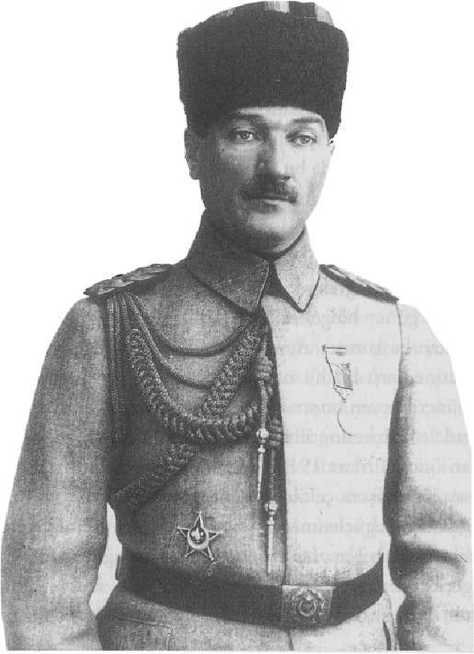
9. Ordu Müfettişi Mustafa Kemal Paşa’nın Samsun’a hareket etmeden kısa bir süre önce poz verdiği fotoğraf, Nisan 1919.
Bu arada Mustafa Kemal ne durumdaydı? Ne yapıyordu? İttihatçı kliğe pek yanaşmayan, iyi askerliğine ve kazandığı zaferlere rağmen ittihatçıların üst kademeleriyle pek geçinemeyen, hatta ittihatçı karşıtı bir konumdaydı.
İstanbul’daydı, askeri kariyeri herkesten saygı görüyor, hatta Enver Paşa dahi onun geride kalanlar arasında emaneti götürecek tek kişi olduğunu ifade ediyordu, işgalciler nezdinde daha konuşulabilir biriydi. Padişah Vahideddin son Avrupa gezisinde yanında olan Mustafa Kemal’e güvenmekteydi. Nihayetinde onu 9. Ordu Müfettişi olarak Samsun’a gitmesi için görevlendirdi. Bu, Osmanlı ordusunda, yüzyıllar boyunca ciddi bir geleneğe oturmuş, önemli bir görevdir. Bu müfettiş paşalar gittikleri bölgede karışıklıkları bastırmak ve hâkimiyeti sağlamak için tam yetkilidirler. Mazide yargılar, cezalandırır, tedbir alırlardı. Son asrın şartlarında dahi soruşturma, acil yargılama, hatta gerekirse valilere emir verme yetkileri vardı.
İzmir’in İşgali
Daha işgalin başında Rumeli, Bosna, Girit ve adalardan gelen göçmenlerle, yerli Türklerin oluşturduğu İzmir’in Müslüman nüfusunun, Yunan işgaline güvenmediği belliydi. Bu olayla birlikte, genç General Mustafa Kemal Anadolu’ya geçmek için daha fazla beklemedi. Türkiye yenikti, bitkindi ama herhangi bir Orta Doğu veya koloni ülkesinde olmayan bir büyük özelliği vardı; eski bir devletin ve askerî bir toplumun yüksek ve hızlı örgütlenme kabiliyeti.
10 yıla varan bir sürede Balkanlar, Trablusgarb ve Birinci Dünya Savaşı’nın bütün cephelerinde olgunlaşmış subay kadrosu, Yunanistan’da General Metaksas’ın açıkça ifade ettiği şeyi haklı çıkaracak bir potansiyele sahipti. Hatırlayalım, ne demişti Metaksas; “Yunanistan küçük ama onurlu ve müreffeh bir memleket olmak durumundadır, maceraya lüzum yok, İzmir’e çıkılmamalıdır.” Sonuçta, zor zamanda bile karşısındaki ordunun kumanda kademelerinin derlenip toparlanabileceğini anlamıştı. Nitekim daha sonra “Hiç değilse İzmir’de kalınmasını, daha fazla ilerlenmemesini de” ısrarla tekrarlamıştı.
15 Mayıs 1919 günü karaya çıkan Yunan kıt’alarının karşısında, o gün, o an ilk şehitler de adlarını tarihe yazdırdı. Bunların bazıları mevcut kolordunun subayları ve gazeteci Hasan Tahsin gibi görevlerinin sorumluluğu ve onuruyla hareket etmiş olan kimselerdi. Bazıları ise karaya çıkan Yunan kıtaatın efradının askerî teamül ve disiplinden yoksunluğu dolayısıyla katledilen asker ve sivillerdi.
Şehrin Yahudi nüfusu hiçbir zaman işgalcilere itibar etmedi. Uzun tarihin çileleri yanında, 1912’de Selanik şehrinde Helen-Hıristiyan zihniyetin yaptığı katliam anılardaydı. Şehrin iktisaden hâkimi olan Avrupa kökenli Levantenler ise mazide Osmanlı idaresinin onlara verdiği güven ve imtiyazları yeni idarede bulamayacaklarını biliyorlardı. Yunanistan’ın gönderdiği Vali Stergiadis onların nezdinde hiçbir zaman II. Meşrutiyet döneminin valisi Rahmi Bey’in üstün görünüşüne sahip değildi. Kaldı ki Venizelos’un dostu olan ve iyi hukukçuluğu bilinen Stergiadis’in başını ağrıtan sorunlardan birincisi, şehrin Rum tüccarlarının Levantenlerle çekişmesi ve valiyi, hemen hiçbir görüşme yapmamasına rağmen, o cenaha meyletmekle suçlamalarıydı. Bu konuda çok abartılı ve tarafgir bir yayın olan Giles Milton’ın Paradise Lost’u-41 ile Yavuz Özmakas’ın Metropolit Efendi: Rum
Metropoliti Hrisostomos’un İzmir Günleri-42 adlı monografisi birlikte okunmalıdır.
İngiltere, Yunanistan’ı hem manen hem maddeten destekliyor, bütün harcamalar İngiliz sterliniyle yapılıyordu. Doğrusu Fransa dahi Yunanistan’ı desteklemekte tereddüt etmemiştir. Ama İtilaf Devletleri’nin üçüncü unsuru olan İtalyanlar Yunanistan’a karşı hiç de onlar gibi bakmamıştır. İtalyanlar her yerde, her an Yunan görevlilerin şikâyet ettiği üzere, milliyetçi Türklerle birlikte hareket ediyor ve İngiliz-Yunan iş birliğine karşı düşmanlıklarını gösteriyorlardı.
Yunan birlikleri 14-15 Mayıs 1919’da, Amiral Calthorpe’un kumandasında körfezde demirleyen Britanya donanmasının himayesinde şehre çıktılar. Maalesef şehir, dönemin askerî geleneğine uygun, güçlü ve düzenli ordularınki gibi bir işgal yaşamadı. İzmir, örgütlenmesi dağınık ve beynelmilel savaş kurallarına uyumu yetersiz bir Balkan devletinin ordu ve bürokrasisinin işgalde yarattığı sorunlarla üç yıl boğuşmak zorunda kaldı. 15 Mayıs ve sonrasında, Türk halkı direniş için İzmir’in bu durumundan ibret ve direniş gücü aldı.
İstiklâl Savaşı’nın ilk safhası 11 ay sürdü. Bu değerlendirmenin bir abartma sayılmayacağı açıktır. Ağır Mondros şartlarının daha da ağırlaştırıldığı ve işgal hukuku şartları içinde hareket etmeleri beklenmeyen Yunan işgal kuvvetlerinin tavrının herkesi tedirgin ettiği ve tepki yarattığı açıktır. Hatta bu konuda zorluk çekenlerden birisi Venizelos’un İzmir bölgesine işgal komiseri olarak tayin ettiği Aristidis Stergiadis’tir. Stergiadis, İzmir’de en büyük muhalefeti kiliseden ve kendilerinin Levantenlere karşı yeterince desteklenmediğini ileri süren Rum tüccarlardan görmüştür.
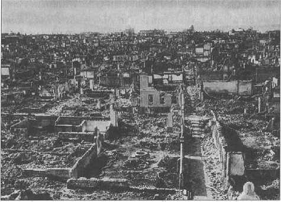
Düşman işgalinden kurtulan ama öncesinde büyük bir yangına maruz kalan İzmir.
Tüm Ege, Marmara, Trakya, Canik (Samsun),Trabzon, Çukurova bölgesi tepki içindeydi. Anteb, Maraş ve Urfa, en başta da Adana, Dörtyol ise silahlı direnişe çoktan geçmişlerdi, ancak, bu kaotik direnişi derlemek ve ortak hedefe yöneltmek birinci safha sayılmalıdır.
Avrupa’nın Yunan Tutkusu (Hellenophilie)
19. yüzyıla gelindiği zaman beşeriyetin ve Avrupa’nın kafasında şu fikir vardı: “Biz ancak ve ancak eski Yunanla var olmuşuz.” Hatta 18. yüzyılda bu daha da abartılıyordu: “Ne ki
Yunanistan’da vardır ondan sonra hepsi boştur (pseudo), tekrarlamadır. Biz yalnızca Helenizm’le var olan modern insanlığız.” Bu, bir Helenizm cereyanıdır ve çok kuvvetli bir akımdır. Bu yüzden Yunan ayaklanması sırasında, Lord Byron başta olmak üzere, oldukça seçkin münevverler gidip Türk cephesine karşı savaşırken ya hastalandılar ya da muharebede öldüler. Bunlar, Yunanistan için ölmüşlerdir. Mesela Lord Byron Türkleri de seviyor, takdir ediyordu, fakat bu onun için mühim değildi; ona göre, hürriyet idealinin yaşaması için Helenlerin Türklerden kurtulması lazımdı. Kendisi bu yolda hayatını ortaya koymuş, hem de Londra’daki parlak hayatı bırakıp, genç yaşta Yunanistan’ın bataklıklarında hastalanarak ölmüştür. Yunanistan’ın ilk başkenti Nauplion’da kiliseye çevrilen bir caminin duvarlarında Yunanistan için gelip muharebede ölen Avrupalıların isimlerini görebilirsiniz. Etkisi bugün dahi süren bir Yunan hayranlığı Avrupa’da makes bulmuştur.
Yunan işgali
Anadolu işgali teşebbüsü Yunanistan için bir felakete dönüşecekti, ancak, aslında bu bir sürpriz değildi. Çünkü Yunanistan henüz tecrübesiz ve birtakım esasları oturtamamış bir Balkan devletiydi. Bu işgal aslında Anadolu direnmesini de ateşleyen bir fitil oldu. Fransa doğuda Ermenilerin yardımından istifade etti ve yabancı bir yardımcı kuvvet olarak kullandı.
Türkiye’nin değişik bir ülke olduğu açıktır. Moskova tarafından komünist enternasyonale kazanılabilecek bir ülke olarak görülmüyordu. Bu tespiti yapmış Kızıl Ordu’nun ünlü generali, Sovyetler Birliği’nin kurucu kumandanlarından, Ukraynalı Mihail Frunze gibi gayet iyi gözlemciler vardı. Hâlâ Rusya askerî akademi onun adını taşır. Kırgızistan’ın başkenti Bişkek’e, o bölgeleri işgal eden kumandan olduğu için onun adını vermişlerdi. Buraya geldiği zaman, daha başından şöyle demiştir: “Bu zor şartlarda bile burasının sosyalizmle ilgisi olamaz, burası bambaşka bir ülke".-43 Millî Mücadele yıllarında Türkiye’de görev yapan Sovyet Rusya elçisi Semyon İvanoviç Aralov’un gözlemleri bu kadar etkili değildir.-44 Frunze çok daha keskin görüşlüydü ve Kızıl Ordu’nun entelektüel kumandanıydı.
Yeri gelmişken, Rusya’nın yardımlarıyla ilgili bir küçük not vermek lazım. Sovyetler Birliği’nin yardımı meselesi, hâzineden ayrılan paradan çok, oradaki Müslüman toplumun topladığı ianeyi içeriyor. Ruslardan alınan kılık-kıyafet vardır, hatta İsmet Paşa’nın giydiği şey besbelli ki Kızıl Ordu generallerinin, albaylarının giydiği bir kaputtur. Fakat bir kurmay desteği yoktur. Frunze gibi gelenlerin istisna olduğu belirtilmelidir.
Anadolu direnişine, İngilizlerin Gelibolu’ya sevkedip âdeta enterne ettiği Vrangel’in Beyaz Ordu subayları da içlerinde doğan İngiliz nefretinden dolayı katılmak istemişler, ama bu girişimleri sebebiyle generalleri tarafından feci şekilde cezalandırılmışlardır.
Anadolu Direnişi
Sanıldığının aksine, ilk kurşun İzmir’de değil, henüz 1918’in Aralık ayında ilk direnişin başladığı Dörtyol’da atıldı. Doğu’da, Kars’ta Cihangirzade vardı ve bir hükûmet kurmuş, kuvvet toplamıştı.
Ancak asıl düşmanı İngilizler değil, Ermeni çeteleriydi.
Maraş’ta ve Anteb’te Fransızlar doğrudan doğruya hedef alındı. Unutulmamalıdır ki, ordunun içindeki jandarma yine çok çekinilen bir unsur olan Ermenilerdi. Çukurova’da Ermenilerin dirilmesine karşı, “kaç kaç" denen bir dönem var. Bazı yerli toprak sahipleri, hatta toprak sahibi olmayanlar bile dağlara çekilmiştir. Ancak sonrasında teşkilatlanarak mücadele yürütmüşlerdir ve Fransa bu bölgeyi terk etmek zorunda kalmıştır.
Hulasaten; ilk patlayan bir genel mücadele olmayıp herkes kendi bölgesinde, özellikle oradaki azınlıklara veya işgal kuvvetlerine karşı bir direniş başlatmıştır.
Dörtyol, Anteb, Maraş’taki direniş, Millet Meclisi’nin kuruluşundan çok daha önce henüz Mustafa Kemal Paşa Anadolu turunu ve kongreleri tamamlarken başladı. 1919 yani 1920’ye sarkmadan bu direnişler oldu ve hatta neticeler alındı. Fransızların tabiriyle, “Kağnı,kamyona karşı zaferi kazandı."
Kurtuluşun İlk Durağı: Samsun
19 Mayıs 1919’da Mustafa Kemal’in Samsun’a çıkmasından 23 Nisan 1920’de Anadolu’da saltanat ve hilafetin gerçek koruyucusu ve kurtarıcısı olduğunu açıklayan Millî Meclis Hükûmeti’nin (Türkiye Büyük Millet Meclisi Hükûmeti) ortaya çıkmasına kadar geçen 11 aylık sürede Millî Mücadele’nin birinci safhası tamamlanmıştır.
15 Mayıs 1919’da İngiltere tarafından Yunan kuvvetlerinin Küçük Asya’ya, İzmir limanına çıkarılması, galiba hem müttefikler arasındaki hem de Türk halkı ve askerleriyle yeni statü arasındaki çatışmayı ortaya çıkarmıştı ve Fransa izlenen politikadan memnun değildi.
İstanbul’a bir fatih gibi at üzerinde giren Balkan Cephesi’nin muzaffer kumandanı Franchet d’Esperey bazılarının sandığı gibi Türk aleyhtarı değildi. Aksine Anadolu’daki mücadeleyi Genç Türk takımının başlattığını gördüğü zaman sarf ettiği söz, “Bu Genç Türkler her şeye rağmen Türk halkının dinamizmini temsil ediyor ve geleceği bunlar inşa edecek. İhtiyar Türk takımı işe yaramaz" olmuştu.
Mondros sonrasında Mustafa Kemal’e, henüz İstanbul’a yeni gelmişlerken yaveri İtilaf Devletleri’nin donanmalarını kast ederek “Paşam, gelmişler" demişti. İstanbul limanı yabancı gemilerle doluydu. İşte o gün mavi göğün altında, masmavi Marmara’ya bakarak, “Geldikleri gibi giderler" dedi. Memleket her ne surette olursa olsun, işgalden kurtarılmalıydı ve kurtulabilirdi. Bunun için İstanbul günlerinde başta asker arkadaşları olmak üzere pek çok kesimle irtibat kurdu ve kurtuluş çareleri aradı. Yaklaşık altı aylık çalışmaları onu kurtuluşun Anadolu’dan başlayacağı görüşüne getirdi. Anadolu’daki çatışmalar, bilhassa Karadeniz’de Pontus Rum hareketi ve çeteciliği, ardından Giresunlu Osman Ağa gibi yerel önderlerin karşı hareketi örgütlemesi, Britanya komiserliğini bu hareketleri önlemek ve gerekli asker sivil bürokrasi kadrolarını dizginlemek, hatta din görevlilerini kullanmak konusunda Saltanat makamına telkin ve tavsiyeye zorladı. O an VI. Mehmed Vahideddin için İttihatçılığa fazla bulaşmayan, daha doğrusu lider kadrosuna yakın olan Mustafa Kemal Paşa en uygun müfettişti. Müfettiş paşalar Osmanlı idari tarihinde önemli bir kurumdur. Celali isyanlarından beri fevkalade yetkili müfettiş paşalar görevlendirilmiş, II. Viyana Muhasarası’ndan sonraki karışık yıllarda da bu görevlendirme uygulanmıştır. Anadolu’da asayişi sağlamak için müfettiş paşalar göndermek ve Cumhuriyet döneminde dahi umumi müfettişlikle karışık bölgelerde idareyi düzeltmek bu ananeye dayanır.-49
Padişahın Mustafa Kemal Paşa’yı desteklediği ve işgal kuvvetlerinden muhalefet görmediği açıktır. 30 Nisan’da tayin kesinleşmişti ve gelişmeler ve İzmir’in işgali üzerine Anadolu’ya hareketin hızlanması gerekiyordu. 9. Ordu mıntıkasına gidecek, karargâhındaki subaylar ve siviller de onun gelecekteki kadrolarını oluşturacaktı. İzmir’in işgali üzerine bu kesim gecikmeden Samsun’a yöneldi. Zira ortaya çıkan patırtı ve çatışma havası projenin terk edilmesine neden olabilirdi.
15 Mayıs’ta Yunanlıların, İngiltere desteğiyle İzmir’e çıkışı üzerine, Dokuzuncu Ordu Müfettişi Mustafa Kemal de Bandırma Vapuru’yla iki gün içinde Samsun’a hareket etti. 19 Mayıs Pazartesi günü sabah saatlerinde Samsun’a geldi.
Sandallarla Reji İskelesi’ne çıktılar. Resmî görevli olması sebebiyle bir heyet tarafından karşılandı. Samsun, kurtuluş mücadelesinin fitilinin ateşlendiği şehir oldu. Nitekim seneler sonra o günü anlatırken, “Ben Samsun’u ve Samsun halkını gördüğüm zaman memlekete ve millete ait bütün tasavvurlarımın, kararlarımın yerine getirilebilir olduğuna bir defa daha kuvvetle inanmıştım. Samsunluların hal ve durumlarında gördüğüm, gözlerinden okuduğum vatanseverlik, fedakârlık, ümit ve tasavvurlarımı müspet bir inanca götürmeye yeterli olmuştu" diyecektir. Samsun, Anadolu’ya çıkış noktasıydı. Bu tarihimizin en önemli dönüm noktalarından biridir. Atatürk de zaten Nutuk’u bu tarihten başlatır, ileride hatta kendi doğum gününün tarihi olarak 19 Mayıs’ı seçmesi de böyle açıklanabilir.
Bir müddet burada mesai yaptıktan sonra Havza ilçesine geçti. Tabii kısa sürede Mustafa Kemal bu görevinden azledildi ama yine de Anadolu’da direnişi örgütleyen Erzurum ve Sivas kongrelerini tertip ederek Ankara’nın ve yeni Meclis’in yolunu açtı. Bu noktada, Mustafa Kemal’e bağlılıklarını bildiren ve Anadolu’da direniş hareketini kuvvetlendiren kumandanların varlığı da unutulmamalıdır: Refet Bey (Bele), Rauf Bey (Orbay), Kâzım Karabekir Paşa, Ali Fuat Paşa (Cebesoy)...
Diğer Paşa’lardan Farkı
Vatansever, yetenekli ve mücadele taraftarı tek kumandan elbette ki Mustafa Kemal Paşa değildi. Ona bu mücadelede yardımcı olan kumandanlar vardı. Ancak onu diğerlerinden ayıran en önemli farklılığı elbette ki dehasıdır. En akıllı, önde gelen generallerimiz bile -ki bence kurmay olarak makul bir görüş- “Bursa’yı Antalya’yı, İzmir’i kurtarmakla uğraşmayın, olacak şey değil, tükeniriz, elimizdekini de kaçırırız" diyorlar, Anadolu ve Doğu Anadolu ile yetinilmesi gerektiğini söylüyorlardı ki bu “İlk hedefiniz Akdeniz’dir" düşüncesine muvafık değildi. Atatürk’ün kafasındaki geleceğe ait savaş hedefi çok daha farklı ve doğru olanıydı.
Tamimler, Kongreler, Görüşmeler
Mustafa Kemal Paşa ve beraberindekiler 25 Mayıs günü Havza’ya ulaştılar. Burada çok kalınmamıştır, zira, şehri örgütlenmeye çok uygun bulmadılar veya burası yeterince güçlü bir stratejik merkez olarak görünmüyordu. Ancak bir tamim yayımlandı. Mustafa Kemal, Mondros’un hilafına, askerî birliklerin terhis edilmemesini istiyordu. Ayrıca halktan direniş teşkilâtları kurmaları ve protesto eylemleri yapmaları da isteniyordu.
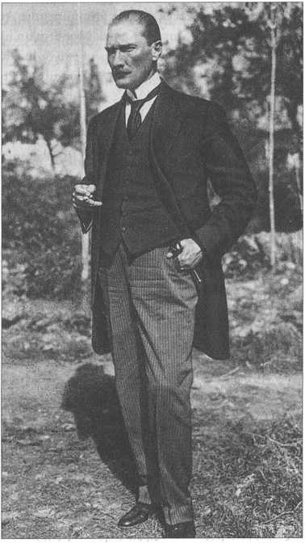
Mustafa Kemal’in Sivas Kongresi sırasında çekilen bir fotoğrafı,Eylül 1919.
Öte yandan İngilizler, İstanbul’u sıkıştırmaya başlamışlardı. Zira Mustafa Kemal’in Samsun civarına gelişinin kâğıt üstündeki sebebi, bu yörede Türklerle Rumlar arasında çıkan çatışmaları araştırıp, rapor hazırlamaktı. O ise İstanbul’dan gelen telgrafları geçiştiriyordu.
Amasya’ya geldikten sonra çalışmalarına devam eden Mustafa Kemal, Rauf Bey (Orbay), Refet Bey (Bele) ve Ali Fuat Paşa (Cebesoy) ile birlikte bir tamim yayımladı. Amasya Tamimi’ni izleyen dönemde pek çok kumandan daha imza koymuştur. Bu “tamim” ile memleketin içinde bulunduğu durum resmediliyor, kurtuluş için yöntemler ortaya konuyor ve millî bir kongre toplanması isteniyordu. Aynı tamim “Milletin iradesi bu mücadeleyi yürütecek ve kararı alacaktır” diyordu. Millî Mücadele yolunda çok önemli bir adım atılmıştı.
Sivas’ta millî bir kongre toplanacaktı ancak öncesinde daha evvel planlanmış olan bir başka kongre daha vardı. Erzurum’da Temmuz ayında toplanan bu kongreye katılmak için yola çıkıldı. Kongre, toplanma amacı bakımından bölgeseldi, ancak, alınan kararlarla millî bir kongreye dönüşecekti. Erzurum Kongresi teşkilâtlanma ve katılım yönünden doğuş halindeydi. Mustafa Kemal Paşa’nın İstanbul’da verilen yetkileri kongre öncesinde elinden alınmış, o da askerlikten istifa ederek milletin bir ferdi olacağını söylemişti. Ancak bu statünün bu mücadeleyi götüremeyeceği de barizdi. Kâzım Karabekir ve Ali Fuat Paşa’ların Mustafa Kemal’i yine kumandanları olarak tanıyacaklarını bildirmeleri ve bir nevi biat etmeleri mücadelenin yolunu berkitti ve kongre başkanı seçildi.-46 Osmanlı tarihinde ilk defa merkezin karar ve kesin emirlerinin aksine hareket edip zümreleşme vardı ve bunu devletin asker ve sivil memurları yapıyordu. Yeni unvanı, Temsil Heyeti Başkanlığı idi.
“Millî sınırlar içinde vatan bir bütündür,parçalanamaz" ve “Her türlü yabancı işgaline ve müdahalesine karşı millet hep birlikte direniş ve savunmaya geçecektir" gibi önemli maddeler ilan edildi.
Erzurum’dan sonra toplanacağı Amasya Tamimi’nde ilan edilen millî kongre için Eylül ayında Sivas’a geçildi. Ülkenin dört bir yanından delegeler Sivas’a geliyordu. İstanbul hükümeti ise kongrenin basılması ve Mustafa Kemal’in tutuklanması emrini vermişti. Kongre bu şerait içinde toplanmıştı. Yeni bir heyet teşekkül ederken başkan yine Mustafa Kemal idi. Erzurum Kongresi kararları aynıyla kabul edildi ve manda ve himaye kati suretle reddedildi. Paşa, Sivas’ta 108 gün geçirdi. 30’u aşan delegenin toplandığı yerin sadece bir meclis değil, bir toplantı mahfeli görüntüsünde olduğunu belirtmek gerekir. Ama Anadolu mücadelesi burada düzenlendi; malzemenin niteliği, etraftaki asker ve sivillerle olan ilişki savaşı tayin edecekti. Sivas Kongresi kararları içindeki en önemli ifade yeminde vardı: Buna göre “Vatanın bu hale gelmesindeki rolleri nedeniyle İttihat Terakki ricalini tedib edeceğim. Ben İttihatçılığın ihyasına çalışmayacağıma, İttihatçı yollarla ve siyasetle ilişki kurulamayacağı ve vallahi ve billahi..." İstanbul Hükümeti ve bunun Anadolu Hükûmeti’ni maceracı İttihatçılıkla suçlaması reddediliyor ve bu hareketle ilgileri olanlar artık Berlin ve Sovyet topraklarında olan veya Azerbaycan’da bulunan İttihatçı liderle alakalarını kestiklerini böylece ilan ediyorlardı. Bu konuda değişim yoktu ve taviz verilemezdi.
Bu esnada İngiliz yanlısı sadrazam Damat Ferid görevden alındı ve yerine Ali Rıza Paşa geldi. O, doğal olarak milliciydi. Temsil Heyeti ile irtibat kurmak için Bahriye Nazırı Salih Paşa’yı görevlendirdi ve iki taraf Ekim ayı içinde Amasya’da görüşüp uzlaştılar. Nihai amaç, meclisin işlerliğini sağlamaktı. Elbette bu durum işgal kuvvetlerinin hiç hoşuna gitmeyecekti.
Bu arada Mustafa Kemal Paşa yılın son günlerinde Ankara’ya geldi ve 27 Aralık’ta Anadolu’nun o küçük ama tarihî bakımından önemli merkezi olağanüstü bir karar verdi. Bir şehrin halkı ilk defadır ki toptan bir siyasi karar veriyordu. Karara çok geniş zümreler ve kalabalık sayıdaki temsilcilerin katıldığı anlaşılıyor; şehrin tüccarları, uleması, tarikat şeyhleri gelen askerî heyete bağlılık bildirmiştir. Bu siyasi bakımdan da önemli bir gelişmeydi. Mücadelenin merkezi Ankara olacaktı.
Amasya görüşmelerinin de etkisiyle Osmanlı Mebusan Meclisi çalışmaya başladı. Meclis, 12 Ocak 1920’de İstanbul’da toplandı. Biraz aşağıda da belirttiğimiz gibi baskı altındaydılar ancak yine de Misak-ı Millîyi kabul ettiler.
İstanbul’un İşgali
Misak-ı Millî’nin Osmanlı Meclis-i Mebusan’ı tarafından kabulü ve yarattığı heyecan Britanya’nın hiç hoşuna gitmedi ve 16 Mart 1920’de İngilizler Meclis’i bastılar,-49 toplantı halindeki mebuslardan bazılarını tutuklayarak götürdüler. Böylelikle İstanbul fiilen ve resmen işgale uğradı. Osmanlı Meclis-i Mebusan’ı kapatıldı.
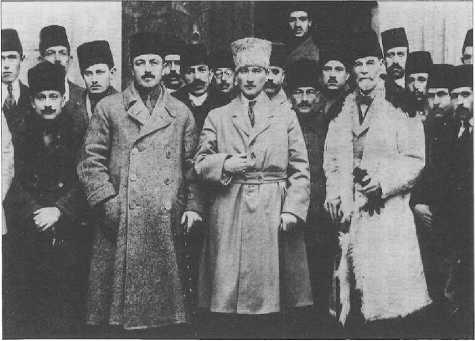
Sivas Kongresi’nden seçilen Heyet-i Temsiliye üyeleri Ankara’ya giderken Kayseri’de. Sağdan sola: Ahmet Rüstem (Bilinski), Mazhar Müfit (Kansu) Bey, Mustafa Kemal Paşa, Hüseyin Rauf (Orbay) Bey, Mustafa Kemal Paşa’nın yaveri Teğmen Muzaffer (Kılıç) Bey, Hakkı (Behiç) Bey, 20 Aralık 1919.
Görünüşte Osmanlı İmparatorluğu ortadan kaldırılmış değildi. İstanbul’da sefirler vardı ve Saltanat hükümetinin dış ülkelerde sefirleri vardı. Ordu elbette ki kontrol altındaydı ama dağıtılmış değildi. Bir Osmanlı hükûmeti vardı, fakat bu hükûmetin kendi başkentindeki asayiş gücü Unkapanı Köprüsü ile Bebek Karakolu arasındaydı. O da sanırım devletler arası nezaketten dolayı idi. İstanbul’da müttefiklerin kontrolünü bile Britanya üstlenmişti. İtalya’nın Anadolu yakasındaki işgal faaliyeti fevkalade sınırlıydı ve Kadıköy’de özenli, anlayışlı bir işgal yönetimi kurulmuştu. Suriçi İstanbul’u ise Fransa’nın denetimine bırakılmıştı. Burada Anadolu’ya silah kaçıranlar başta olmak üzere bütün millî teşekküllerin Fransa tarafından çok ciddi bir şekilde kontrol edilip önlenmediği bilinmektedir. Bu durumda İngiltere, payitahtın askerî, siyasi asayiş denetimini eline aldı, ancak, büyük hatalar yaptı. Karşımızda alışılmış Britanya Devleti yoktu. Mütareke İstanbul’unda, bazı aşırı görüşlü azınlık unsurlarla iş birliği yapan, esnafın denetiminde rüşvete kadar giden, adaletsiz olayların sıkça görüldüğü ve milletin kendilerine gittikçe hınç beslediği bir devlet gücü vardı. Öte yandan mütareke İstanbulu’nda alışılmamış olaylar da göze çarpıyordu. Daha modern bir hayat başlamıştı. Proleter sol eğilimli bazı siyasi partiler faaliyetteydi.-^48 Fakat bunların hiçbirisi itimat edilecek ve oturacak bir düzeni sağlamış değildi. Anadolu Hareketi, dağılmayan ve her şeye rağmen ananesini, hiyerarşisini elde tutan bir ordunun başarısıdır. Anadolu’da devlet mekanizmasının bütün unsurları ele geçirilmiş ve kontrol altına alınmıştı. Eski bir imparatorluğun teşkilatına yeni unsurların getirdiği dinamizmle mücadele yürütülebilmişti.
Aslında 1204 yılında da İstanbul, yani o zamanki adıyla Konstantinopolis, Batı’dan gelen barbar sürüleri tarafından işgal edilmişti. Şüphesiz o zaman 1000 yıllık bir imparatorluğun merkezi olan İstanbul, kavimler arası bir Haçlı işgali yaşıyordu. 1918’de ikinci defa olarak gene uluslararası bir işgale uğradı. 1204’te zırhlı şövalyeler, 1918’de de zırhlı gemiler İstanbul halkını zor bir dönemin içine çekti.
Bizans’ın Konstantinopolis’i de Osmanlı’nın İstanbul’u da çok görmüş geçirmiştir; hatta 1853’te Rusya’yla yapılan ünlü Kırım Savaşı’nda, İstanbul halkı müttefik olarak gelen orduları taşıyan İngiliz, Fransız, İtalyan Piemonte gemilerini görmüştü. 1853’ün dağdağalı günlerinde İstanbul halkının kendileriyle birlikte savaşıp ölen bu Avrupalı askerlere sempati duyduğu açıktı.
O günün müttefiklerinin torunları ise 1918’de işgal kuvveti olarak dönmüşlerdi. Dolayısıyla İstanbul halkının 1853’te değişmeye yüz tutan geleneksel kuşku ve nefret duygusu hemen avdet etmişti. Britanya zırhlılarından dökülenler kendilerini şehrin sahibi addettiler. Bütün güvenlik mekanizması ve ekonomik hayat onların denetimine girdi.
Bu şaşılacak bir gelişme değildi; ama doğrusu Britanya idaresinden beklenmeyecek beceriksizlik gösterdiler. Britanya kolonilerinde, Hindistan’da, Malta ve Cebelitarık’ta, hatta himaye ve işgal altındaki Mısır’da kurdukları etkili denetim ve yönetimi burada gerçekleştiremediler. Eski imparatorluğun başkenti de onları hiç benimsemedi.
1918-1922 dönemi zabıta tarihini hâlâ kulaktan dolma biliyoruz. Oysa birtakım olaylar incelendiği zaman garip boyutlar ortaya çıkıyor. Adeta şehrin kriminal çeteleri de etnik bir ayrımın içindeydi ve bu ayrıma göre Britanya polisiyle iş birliğine veya çatışmaya giriyorlardı. Kısacası Batı Avrupa ülkeleri, tarihte görülmüştür ki, düşman tarafından işgal edildiklerinde âdeta “Kader, kendimiz ettik, kendimiz bulduk. Bundan sonrasını akıllıca kurtarmaya çalışalım" derler. Bizim kavmin böyle bir zihniyeti benimsemesi zordur, zira, evimizde yabancıya pek tahammül edemeyiz. Nitekim İstanbul bu gerilimi çok ilginç bir biçimde yaşadı. İngilizlerin çaresizlik içinde Yunanlı müttefike meyletmesi ise hem öbür müttefiklerini hem de şehir halkını çok kızdırdı. Tarık Zafer Tunaya Hoca’nın opus magnurmu olan Siyasi Partilerin üçüncü cildi-49- Mütareke devrini anlatır. Hiç kuşkusuz sosyalizm ve etnik milliyetçilikler gibi akımlara mensub olanlar getirilen siyasi örgütlenme hürriyeti havasından yararlandılar. Türk ulusçuluğunun bu derecede özgür kaldığını söylemek mümkün değildir. İmparatorluğun başkentinde, Falih Rıfkı’nın deyişiyle, “Türklükten kaçan kaçanaydı.” Dört yılda ilginç gelişmeler ortaya çıktı. Uzun bir savaşın yorgunluk ve yıkımından dolayı yenilgi ve direniş, teslimiyet ve dik başlılık İstanbul’da savaş veriyordu. İngilizlerin şehir halkı üzerinde kurdukları baskı ve olumsuz etkiler sonra Orta Doğu ve Filistin’de de aynı beceriksizlikle sürdü.
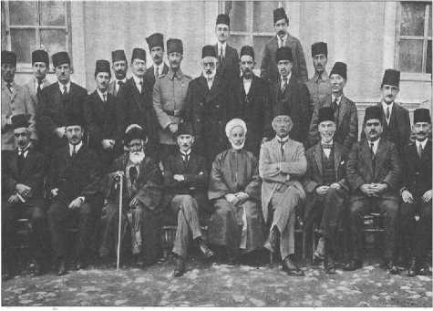
Mustafa Kemal, Sivas Kongresi’nden sonra kongreye katılanlarla birlikte, 1919.
Her kuvvetin olgunlaşma ve çürüme zamanı vardır. Britanya çürüme döneminde, İstanbul ve Küçük Asya’ya toslamıştı. Sanılıyordu ki sarsılan ve çözülmeye başlayan imparatorluk sadece Osmanlı’dır. Oysa Birinci Dünya Savaşı’ndan sonra yeryüzündeki hiçbir kavim başka bir imparatorluğun bayrağı altında sakin ve uyumlu unsurlar olarak yaşamak niyetinde değildi.
İmparatorluğumuzun asker ve sivil bürokrasisi kendini çabuk toparladı ve yer yer direnişe başladı. İtalyanlar büyük savaş sonunda, Britanya ve Yunanistan’ın kendilerini soyduklarına inanıyorlardı ve bu yüzden de Anadolu’nun yanında yer almışlardı. Şehre çıkar çıkmaz İtalyan birliklerinin ilk işi 1815 Viyana Kongresi’nde Avusturya’nın kendilerinden zapt ve gasp ettiği Tomtom Kaptan Sokağı’ndaki Venedik Sarayı’nı işgal edip, içindeki Avusturya sefaret heyetini kapının dışına koymak oldu. Doğrusu haksız da sayılmazlardı; Venedik Sarayı yeniden İtalya’ya geçti ve el’an İstanbul’daki İtalyan konsolosluğudur.
Yeni Meclis’in Yolu Açılıyor
Osmanlı Mebusan Meclisi’nin Misak-ı Millî kararlarını kabul etmesi üzerine İtilaf Devletleri hem İstanbul’u işgal etmiş hem de Osmanlı meclisini dağıtarak, mebusların bir kısmını tutuklayıp, sürgüne yollamıştı. Bunun üzerine Ankara’da yeni bir Millî Meclis toplanması kararı alınmıştı.
23 Nisan’da Ankara’da toplanan meclisin çok önemli özellikleri vardır. Bir defa kurucu bir meclisti. Hukukunu kullanamayan bir payitaht adına Anadolu içlerinde bir kurucu payitaht olmuş, yetki üstlenmiş ve “Türkiye" adını da ilk defa kullanmıştır. İstanbul’da dağıtılan meclisin kalan üyeleri yeni meclisin de üyesi olmuşlardı.
23 Nisan 1920 önemli bir tarihtir, zira, bu tarihte milletimizin adı, devletin adı olarak konmuştur. Bu isim “Birleşik Devletler" tarzında bir isim değildir, bilakis, tarih boyunca var olan bir kavmin adının bir devlete verilmesidir. Türkiye Büyük Millet Meclisi Hükümeti bir şeyi daha bilinçli olarak ifade ediyordu; bu, “konvansiyonel" dediğimiz meclis hükûmeti sistemidir. Bir ölçüde ihtilâlci bir hükûmettir; Fransız Konvansiyon Meclisi gibi, o dönemde komşusu olan Sovyet idaresi gibi meclise dayanan bir idare sistemidir. Fakat tarihteki diğer meclis hükûmeti sistemlerinden bir farkı bulunur: Burada,TBMM’de aktif ve canlı bir muhalefet vardır. Müdafaa-i Hukuk grubundan gelen ve Mustafa Kemal Paşa’nın etrafında ona itirazsız bağlı olan üyelerin dışında muhalifler de vardır. Bu muhalefet içinde bazıları padişahçı, şeriatçı, bazıları solcu, bazıları ise İttihatçıdır. İttihatçıların hepsi de Anadolu hükümetine ve Mustafa Kemal Paşa’ya itaati boynunun borcu bilen takımdan değildir. Bu ikinci takım çok kısa bir zamanda da muhalif taraflarını ortaya koymuşlardır. Kurtuluş Savaşı bu muhalefete rağmen yürütülmüştür ve burada hakikaten ince bir politika izlendiği görülmektedir.
Şu da çok önemlidir; Lozan’dan sonra Cumhuriyet ilan edilmiştir, ancak, o sıra, “Meclis hükûmeti” dönemidir. Türkiye, 23 Nisan 1920’yle Temmuz 1923 arasında, “Meclis hükûmeti” olarak devam etmiştir, zira, daha cumhuriyet ilan edilmemiştir. Bu bir bağımsızlık savaşı ve işgalcilere karşı bir direnişti. Bizim zaferimizdi. Üç senelik “Meclis hükûmeti” dönemi zaferin yapıtaşıdır.
İttihatçılık Suçlaması
İstanbul’daki Damat Ferid grubu Mustafa Kemal’i ve çevresindekileri devamlı olarak ittihatçılıkla suçluyorlardı. Hâlbuki onların İttihatçılıkla bağları çoktan kopmuştu. İttihat ve Terakki liderlerinin onları pek sevmediği ve onların da ittihatçılardan pek hazzetmediği herkesçe malumdur. Ama bu gibi suçlamaların haklı bir tarafı da vardır. Ankara’daki ilk meclis binası bile bir İttihat Terakki kulübü olarak yapılmıştı. Nihayet milletin en dinamik unsurları bu partinin saflarındaki genç unsurlardı. Bunların bir kısmı eski ittihatçı liderleri tutuyorlardı. Hatta Enver’i iltica ettiği Almanya’dan getirip Millî Mücadele’nin başına geçirmek isteyenler de vardı. Ama ittihatçıların önemli bir kısmı artık bunun yürümeyeceğini ve bu sevdayı terk etmek gerektiğini, Anadolu Müdafaa-i Hukuk grupları etrafında, Mustafa Kemal Paşa’nın etrafında toplanıp Mustafa Kemal Paşa’ya kesin olarak katılmak gerektiğini anlamışlardı. Esasen yukarıda da belirttiğimiz gibi İstiklâl Savaşı kadrolarında etkin ve önde gelen ittihatçı yer alamamıştı. Sivas Kongresi üyelerinin değindiğimiz yemin metni de ittihatçı siyaseti men eder.
Büyük Millet Meclisi
Toplumların uzun hayatında rejimler de değişir. Bu değişim her zaman aynı yolla olmaz. Kimi zaman Fransa ve Rusya’da olduğu gibi çok kanlı bir şekilde gerçekleşebilir. Türkiye de bu değişimi bir savaşla, ama dışa karşı verilen bir savaşla yapmıştır ki bu aslında bir talihtir. Bir iç savaşın getireceği onursuzluk ve kardeş kavgasındansa dışa karşı düşmanı kovalayarak bir cumhuriyet ilan etmek çok daha onurlu bir sayfadır ve milletin geleceği için sağlam bir inşaattır. Fakat şu gerçeği tebarüz ettirmekte fayda var. Değişen devlet değildir, yeni devlet bir slogandır ve aslında devletimiz devam ediyor. Ama cumhuriyetimiz kuruluyor ve rejim değişiyor. Bu çok önemli bir nokta ve üzerinde durmamız gerekir. Tabii ki biz bu değişikliği hiç de kolay yapmadık. Birtakım insanlar bunu kabul edemeyecek, hatta bizzat cumhuriyetin kurucu kadrosu diyeceğimiz arkadaşlar arasında bile bu konuda bir görüş farkı olmuş ve bir çatışma ortaya çıkmıştır.
23 Nisan 1920 Cuma
23 Nisan 1920 günü Ankara’da yeni bir dönem başladı. Bu Meclis hükümetini Afganlar ve yeni Sovyet Rusya tanıdı. Bilhassa Rusya ile yapılan Moskova Antlaşması ile Doğu Cephesi’ndeki problem bitmişti, artık Batı Cephesi’ne yönelebiliyorduk. 23 Nisan 1920’de açılan TBMM’nin bazı çarpıcı özellikleri vardır. Yabancı dillerde devlet Türk imparatorluğu diye, coğrafî olarak vatanımız Türkiye diye anılmasına rağmen, devletimizin ismi ilk defa, “Türkiye" olarak zikredilmiştir ki bu çok önemlidir.
TBMM’nin 23 Nisan 1920’de kuruluşu, tarihte 1400 yıl sonra devlet hayatında ilk defa Türk isminin kullanılması anlamına da gelir. İtilaf Devletleri’nin mağlub ettiği hiçbir memleket, Türkiye’nin gösterdiği direnişi göstermemiştir. Bunun nedenleri var. Ağır şartlarla anavatanı bile parçalanan tek ülke (Macaristan istisnasıyla) Türkiye’ydi. Britanya İmparatorluğu dört yıllık savaşın acısını çıkarmak niyetindeydi.
Zor şartlar altında toplanan TBMM’yle beraber, bir İslam devletinde ilk defa bir meclis, “şûra" görevini yerine getiriyor ve bütün iktidarı ele alıyordu. Daha önceki meclis (1877-78) ilk olmasına rağmen bütün iktidara sahip değildi ve yürütmeyi denetleyemiyordu.
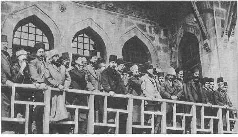
Mustafa Kemal Paşa ve arkadaşları ilk Meclis binası balkonunda, 1920.
Meclis, olağanüstü savaş yetkilerini bile denetleyecek durumdaydı ve denetlemiştir. Burada savaşı yürüten askerlere gösterilen itimat ve uyum söz konusudur. Bu meclis kendisinden sonraki devirde görülmeyecek biçimde orduyu denetlemiş ve dış politikaya da denetleyici bir gözle bakmıştır.
Meclisin açılış töreni ve takip ettiği politika itibariyle bugünkü muhafazakâr çevrelerin neden. 23 Nisan’a cephe aldığını anlamak zordur. TBMM cuma günü, cuma namazı sonrasında,dualarla açılmıştır.
Bu sözde tarihçi tenkitlerinin altında ideoloji değil, başka türlü sebeplerin yer aldığı düşünülmektedir. 23 Nisan 1920’nin hem imparatorluğun dağılmasından sonra ortaya çıkan Balkanlar ve Orta Doğu dünyasında hem de bütün İslam âleminde gerçekten etkileri olmuştur.
Hâlâ Kuzey Afrika’da; Cezayir, Tunus halk kültüründe, pazarda satılan cam altı resimlerde bile İstiklâl Savaşı kumandanlarının portrelerini görürsünüz. Dönemin İslam dünyasında, özellikle Hindistan Müslümanları arasındaki değerlendirmelerin heyecanı halen devam etmektedir.
Muhalefete Rağmen Kurtuluş Savaşı
Ordu kurulacaktı, direniş ise çoktan başlamıştı. Adana, Anteb, Maraş yöresinde bu direniş zafere ulaşmış, Fransa, kendisine ayrılan o bölgede bir şey yapamayacağını anlamıştı. Bir müddet sonra da TBMM hükûmetiyle anlaşmaya giderek savaşmaktan vazgeçecekti. Bu da İngiltere’ye vurulan bir darbe anlamına gelmektedir. Hatırlanması gereken bir diğer önemli unsur da Ankara hükûmetinin müthiş bir diplomatik ilişkiler ağı olduğudur. Demek ki yeni genç Türkiye, Osmanlı mirasını devralmıştı. Bu Genç Türkler’in, Enver ve Talat Paşa gibi devlet adamlarından çok önemli bir farkı daha bulunuyordu; diplomasinin çok önemli bir silah olduğunu kavramışlardı. Beri yandan Mustafa Kemal Paşa bir organizasyon dehasıydı ve hukuktan da hiç ayrılmamıştı. İstiklâl Savaşı kumandanlarından Karabekir Paşa başta olmak üzere İsmet Paşa’da da kanuna, kanuniyet ve meşruiyete uymak zorunluluk ve esastı. 23 Nisan’ı takip eden süreçte, 1876 Anayasa çerçevesi ve Meşrutiyetin getirdiği çerçeve hiç kırılmadı. Bu Anayasa’ya kafa tutulmadı, meydan okunmadı ve onun içinde hareket eder görünüldü.
Kurtuluş Savaşı’nın ilk bir buçuk yılında bölgesel isyanlar ortaya çıktı. Marmara Bölgesi’nde, Çanakkale Biga’dan, İzmit ve Adapazarı, Düzce ve Hendek’e kadar iki devre halinde Anzavur’un ayaklanması olmuştur. Anzavur’un saray çevreleri ve Damat Ferid ile yakın ilişkisi vardı ama cahildi. Diğer yandan “kabilesinin mensuplarını etrafına topladı" diyemeyiz. Çünkü Kurtuluş Savaşı isyanları sadece Marmara bölgesi ve bu yörenin Çerkezleriyle sınırlı değildir. 1856’dan beri Çerkezler imparatorluğun her yerine (Marmara, Bolu, Maraş, Kayseri, Çorum, Amasya ve Hatay ve Suriye ve Filistin) yerleştirilmişti. Ayrıca isyanlar Konya ve Bozok’u (Yozgat) da kapsıyordu. Buralarda ise yerli ahali önde gelmektedir. Balkan Savaşı’nın ve uzun bir dünya savaşının Anadolu halkını askerlik ve harbden bezdirmiş olması sebebiyle bu tepki normaldi. Ancak bu normal anti-militer tepkiyi Anadolu’da yuvalanan eksik eğitimli, Müslüman kanat gösteriyordu. Yine de İstiklâl Savaşı boyunca din görevlilerinin bazılarının aktif rolünü ve Kuva-yı Milliye’yi destekleyen hareketlerini de görmezlikten gelemeyiz. Bu alanda çok önemli bir kadro kalabalığı vardır. Başta Ankara Müftüsü Börekçizâde Rıfat Efendi, hem payitaht hem vilayetlerde Anadolu hükûmetinin fetvalarını destekleyen, vaaz veren, propaganda yapanlar vardı. İstiklâl Savaşı bir iç savaş, kardeş savaşı olarak gelişme göstermek eğilimindeyken Millet Meclisi hükûmetinin nizami orduyu teşkili ve İstanbul’dan gelen subayların katılmasıyla bu safha sona erdi. Ama hiç şüphesiz ki saraya ve Babıâli’ye sadakat kisvesi altında geçinen ve menfaatini karşı tarafla çatışmakta görenler, bu bezgin halkı kışkırtmaktan geri kalmamıştır. Anadolu halkı Birinci Dünya Savaşı’nı tamamlayan milletlerin içinde her şeye rağmen vatan savunmasına katılmakta daha istekli gibidir. Öne düşen askerlerin (ki bu askerler diğer yenilmiş devletlerde sadece homurdanan ve faaliyete geçemeyen bir kalabalıkken, Türkiye’de potansiyel halde ortaya çıkmışlardır) peşine takılmakta tereddüt etmeyen kitleler vardır. Fakat karşı tarafa yanaşan ve bunu kullanarak Millî Mücadele’ye karşı daha baştan direnenler de var. Bunlar çok yorucu oldular, hatta işgal ordularından, Britanya ve Yunanistan’dan daha yorucu olan ve ümidi kıranlar bunlar olmuştur. Din eğitiminin kapasitesi, kalitesi, din görevlilerinin niteliği bir toplum için fevkalade önemlidir. Bunu İstiklâl Savaşı’ndaki ayaklanmalar sırasında daha iyi görüyoruz. Anzavur alaylı yüzbaşıyken emekliye ayrılmış, sonra eskiden başıbozuk paşalığı denen paşalık rütbesi dahi verilmiştir. Burada hiç şüphesiz ki Damat Ferid Hükûmeti’nin ve bürokrasinin aymazlığı ve ucuzculuğu rol oynamaktadır. Ama karşısına çıkan ve bu hareketleri tedip eden de gene bir başka Çerkez olan Ethem’dir. İsyancıların Hendek’te acımasızca katlettikleri kaymakam da (Yarbay Mahmud Bey) “Çerkez Mahmud Bey" olarak anılmaktadır. İsyancılar onu çok fena bir şekilde ortadan kaldırdılar, naaşını suya attılar ve vahşi hayvanlara terk ettiler. Dolayısıyla bu gibi isyanları etnik bir çatışmaya bağlamak doğru değildir. Anzavur’un ilk isyanı Kuva-yı Milliyeci birlikler tarafından bastırılmıştı. Ama ikincisinde, iyi bir savaşçı olmamasına rağmen, Damat Ferid hükûmetlerinin desteğiyle ve isyan için daha verimli bir bölge olan Sakarya havalisi, Düzce ve Hendek’te ortaya çıktı. Buradaki ikinci isyan çok daha güç bastırıldı ve şurası açıktır ki Ankara hükûmeti burada Ethem’e çok şey borçludur ve bunu da açıkça ortaya koymuşlardır.
Daha 1919’da, henüz Millet Meclisi teşkil edilirken hükümete karşı ittihatçılık suçlamasıyla bazı kıpırdanmalar başlamıştı. Anadolu Grubu Sivas Kongresi’nde İttihatçılığı açıkça reddetmesine, hatta telin etmesine rağmen, bu suçlamalar ve muhalefet aynı şekilde devam etti. 1919’ların Türkiyesi’nde birbiriyle zıt basın organlarının çok yaygın olmadığı, teknolojinin gelişmediği ortamda, maalesef şayialar her şeyin önünde gidecek kadar kuvvetliydi. Düzenli ordunun kuruluşu tamamlanana kadar Mustafa Kemal Paşa için bu en zorlu dönemdir. İsyancı kitlelerin arasında da her zaman bir uyum söz konusu değildi. Anzavur’un Gâvur İmam’ı gibi bazısı son derece gaddar, bazıları ne yapacaklarını şaşırmış vaziyette, bazıları kendilerine histerik derecede bağlı militanlar buldukları halde, bunların kimisi doğrudan doğruya düzenli ordudan kaçanlar, yolun ortasında karşı tarafın ajanları tarafından ikna edilmişler. Kuva-yı Milliye’nin askerlerine, subaylarına karşı duyguları farklı; kimisi tam anlamıyla kör bir sınıfsal nefret içinde kimisi bir parça daha yumuşak. Gerede’de asiler Hüsrev Bey’i (Gerede) ele geçirdiler ve tam asacakları sırada bu askerin azametli hali ve görünüşü onları tereddüde sevk etti. Asılması caiz midir, değil midir, diye tartıştılar ve infazı geciktirdikleri anda da yetişen Kuva-yı Milliyeciler onu kurtardılar. Hiç şüphesiz ki onları bastıran insanların da yapıları üzerinde durmak lazımdır. Ethem yarı eğitimli, bilgisiz bir zat, ancak tecrübesi son derece fazlaydı, kuvvetli bir ikna gücü vardı ve bazı karşı taraf militanlarını silahıyla birlikte kazanmıştı. Ethem ve Giresunlu
Osman Ağa (Topal Osman) kuvvetliydiler. Bunların çetelerindeki militanların da halka karşı tutumları farklıdır. Mesela Osman Ağa daha püriten ve düzenli bir ilişki taraftarıdır. Ordu kurulunca bu zümreler tasfiye edildi. Ama Osman Ağa’nın kuvvetleri Millet Meclisi’nin o günden sonraki ilk muhafız birliği oldu. Bu vesileyle belirtmek gerekir ki, Meclis’teki Muhafız birliğinin son zamanlarda lağvedilmesi yanlıştır, yeniden ihdası gerekir.
Tarihler 1920’yi gösterdiğinde Anadolu hareketine karşı kıpırdanmalar başlamıştı. Çerkez Ethem’e hain demek kolaycılıktır. Çünkü bu bir mücadeledir, bir partizanlıktır. Düzenli ordunun sıkıştırmasından dolayı, sonunda Yunanistan’a katıldı diye hain diyenler vardır ama bu bir teslim ve çekilmedir.
Ankara nihayet düzenli ordu ve düzenli savunmaya geçince, otoriteye bağlanmak istemeyen Ethem isyan etti. Hatta onun bir şey istediği yoktur. Astsubaylıktan yetişme olan Çerkez Ethem’in Harbiye’de okumuş ve üzerinde mütehakkim olan iki kardeşi vardır. Mesela Reşid Bey İsmet Paşa’ya çok karşıdır, Reis Mustafa Kemal Paşa’dan çok İsmet Paşa’ya muhalifler ve Ethem’i devamlı etkilemiştir. Aile düzeni içinde, ağabey kardeş ilişkileri içinde sorun büyümüş ve sonunda iş ayrılığa kadar gitmiştir. O noktada askerî kurallar, divan-ı harb, itaatsizlik, isyan suçlaması devreye girmiş ve Çerkez Ethem karşı tarafa sığınmıştır. O sığınma bir tragedyadır ve tarihçi bu olayı öyle görmelidir.
Düzenli ordu kurulmadan önce yardımcı, milis kuvvetler bir nitelik birliği göstermezler. Ege’de Demirci Efe’ninkiler daha çok klasik efe, seğmen takımına yakışır görünümdedir. Elbette ki Ankara’nın emirlerini dinlerler, bulundukları bölgede düşman istilasına karşı kelleyi koltuğa almış, savaşmaktadırlar. Ancak öte taraftan da eski alışkanlıklarıyla bazı zenginlere aşırı haraç koyma huylarından vazgeçmemişlerdir. Karşı çıkanlara da amansızdırlar. Bundan başka bahsettiğimiz Giresunlu Osman Ağa vardır. Kendine göre ilkeleri ve sıkı disiplini vardır. Sözlü tarih ifadelerine ve zamanında dinlediğim hatırata göre milisleri usulsüz yağma, ırza geçme gibi hareketlere tevessül etmemişlerdir. Ankara’nın ilke ve emirlerine son derece sadıktır. Bu konuda da zaten hiçbir isyankâr tavır almamıştır.
Çerkez Ethem, bu iki gruba da pek girmez. O da isteğine rağmen ağabeyleri gibi askerî okula gönderilmemiştir. Fakat askerliğe olan düşkünlüğünden dolayı, çok erken yaşta âdeta evden kaçarak askerî okullarda okuduğu ve astsubay rütbesine ulaştığı bilinmektedir. Bununla da kalmamış, Teşkilat-ı Mahsusa’ya girmiştir. İmparatorluğun Asya coğrafyasının muhtelif kısımlarını görmüş, insanları tanımış zeki birisidir; insan tanımakta ve ikna etmekte eşsizdir. Bu özelliğiyle âdeta bir kumandan vasfına sahiptir. Ama nihayet Osmanlı kurmayı ve ordu geleneğiyle imtizaç etmesi zordur, bu bir tahsil meselesidir. İkincisi de mensubu olduğu kabiledeki aile içi bağların her şeyin önünde gitmesidir. Dolayısıyla Ethem siyasi hayatında, askerî diyemeyeceğiz ama mücadele hayatında fevkalade işler başardığı halde, bilhassa ağabeylerinin bilinçsiz teşvikleriyle Ankara’daki kumandanlarla karşı karşıya gelmiştir. Bu durum sonunda onu nizami orduya katılmakta tereddüde ve bir nevi başkaldırmaya itti. Çok kolayca, ihanet diyeceğimiz hareketlerin içine girdi. O bakımdan kendisini bu şartlar içinde değerlendirmek gerekir. Kaldı ki Çerkez Ethem’in Yunan ordusuna ilhakının ne derece ciddi bir hareket olduğunu, millî orduya nasıl bir zarar verdiğini tartışmak gerekir. Hiç şüphesiz ki cezasız kalmayacak bir hareketti, dolayısıyla bu cezadan kaçmak için uzunca bir mülteci hayatı yaşadı ve yurt dışında öldü.
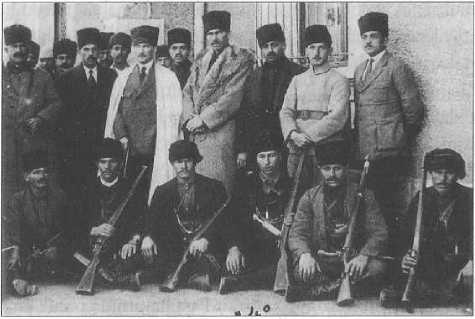
Mustafa Kemal Paşa Ankara İstasyonu’ndaki karargâh binası önünde Çerkez Ethem ve arkadaşlarıyla, Kasım 1920.
Ankara En Örgütlü Şehirdi
Ankara bütün organizasyonun, tüm ordunun odaklandığı yerdi ve İstanbul’da ordunun içinde Ankara’ya karşı bir muhalefet yoktu. Herkes taraftardı; katılmakta tereddüt edenler ve gecikenler vardı ama önemli isimlerin hiçbiri karşı değildi. İstanbul’daki Fevzi Paşa, İsmet Bey gibi önemli isimler de bir müddet sonra Ankara’ya geçtiler. İstiklâl Savaşı’nın başından beri önde gelen üç kumandanın ismi, malum Ordu Müfettişi Mustafa Kemal Paşa, Doğu Menzil Kumandanı Kâzım Karabekir Paşa ve Ankara’da Ali Fuat Paşa’dır. Bu üçünün direniş konusunda bir araya geldikleri ve hiç tereddüt etmeden işleri yürüttükleri açıktır. Üçünün de hem benzer hem farklı tarafları vardır. Bir kere onlar çok bilgili kumandanlardır, bilgileri sadece askerlikle sınırlı değildir. Kâzım Karabekir Paşa hayatında çocuk şarkıları bestelemekten piyes yazmaya kadar işi götürmüştür. Askerlik bilgisi gibi tarih ve edebiyat bilgisi de sonsuzdur ve bildiği lisanlar ortadadır. Çok lisan bilmek Osmanlı kurmaylarının bir özelliğidir. Bu bir ara kesildi ve şimdi yeniden böyle bir merak başladı. Ali Fuat Paşa Polonyalı General Kont Borzecki’nin (Mustafa Celaleddin Paşa) soyundan gelmektedir. İstanbul’un şiddetle ve bilinçle Türkleşen grubunun içinde büyümüştür. Nazım Hikmet’in dayısı, annesinin kuzenidir. Bilgili bir zattır ve liberal vatanperverdir. Mustafa Kemal Paşa’nın vasıfları ise malumdur; imparatorluğun en kozmopolit fakat milliyetçiliklerin de en çok kol gezdiği bir ortamında, Selanik ve Makedonya’da doğup büyümüştür. İstanbul’daki Harbiye’ye gelene kadar askerî okula da orada, Manastır’da devam etmiştir. Bu üçünün direnişin başında yer almaları normaldir. Kesinlikle Anadolu direnişine karşı olanlar vardı ve böyle kalanlar da olduğu gibi, tereddütlü bir dönem geçiren ve beklemede kalanlar vardır. Bekleme yapanların içinde Fahrettin (Altay) Bey, İsmet (İnönü) Bey ve 1914’te artık tuğgeneral, 1920 yılında da Harbiye Nazırı olan Fevzi (Çakmak) Paşa da vardır. Fevzi Paşa sıradan bir kumandan değildir, çok bilgilidir, belirgin ilkeleri vardır ve Oraya gelene kadar ismi duyulmuş başarılı bir askerdir. Maalesef Anadolu direnişinin başında bu hareketi mantıkî görmemiş, hatta yer yer karşı bile çıkmıştır. Bu tavrından dolayı kendisine karşı bir soğukluk olmuştur ama bir gün geldi ki bu insanlar artık
İstanbul’da bir iş yapılamayacağını anlamışlardır. Fevzi Paşa da bunu geç ama nihayetinde anlayanlardandır. Kendisi 17 Nisan gecesi başlayan ve 25/26 Nisan 1920 gecesi biten yolculuğunun sonunda doğrudan Ali Fuat
Paşa’nın Lefke’deki karargâhına gelmiş “Geç geldik biraz ama” demesi üzerine kendisine “Rica ederiz Paşam” diye cevap verilmiş ve telgraf başına geçilmiştir. Atatürk ilk anda gelmemesi yönünde fikir beyan etmiş ama Ali Fuat Paşa’nın ısrarı üzerine kendisine nazikâne bir telgrafla cevap verilmiştir. 25/26 Nisan 1920 tarihli, Mustafa Kemal imzalı bu telgraf şöyledir: “Savfet Bey vasıtasıyla Fevzi Paşa’ya, Anadolu’ya geçtiğinize memnun olduk. Hoş geldiniz. Ankara’da teşrifinize intizar ediyoruz.
Hürmetlerimizle.”-50- Kendisinin bu şekilde Ankara’ya getirilmesi ve karşılanması fevkalade önemli ve tarihi bir hadisedir. Gebze mebusu olarak geldiği Meclis’in açılışının hemen dördüncü gününde nutuk irad etmiştir. Bu sahneyi Şevket Süreyya Bey çok iyi tasvir etmiştir.-51- İngilizlere güvenilmeyeceği, İstanbul hükûmeti ve makarr-ı hilafetin rolünü kaybettiği, fonksiyonsuz kaldığı, bundan sonra Anadolu’da mücadelenin şart olduğu belirtilerek göreve getiriliyor. Görevi yine aynı şekilde Ankara’da Millî Müdafaa Vekâleti’dir ve İcra Heyeti Başkanı, Başbakan olmuştur. Doğrusu büyük bir sadakat ve gayret ile görevine devam etmiştir, en kıdemli kumandandır ve dahli askerî açıdan Millî Mücadele’yi zenginleştirmiştir. Ancak Mustafa Kemal Paşa’ya, Meclis Sakarya Meydan Muharebesi’nde müşir unvanı verdikten sonra, Fevzi Paşa onun ardında kalmıştır. Başkumandanlık Meydan Muharebesi’nden sonra, söz konusu olan müşirliği Fevzi Paşa’ya verir. Bu biraz Napolyon’da görülen, ikinci mareşalliği Fransa’nın bazı generallerine tevdi etmek gibi bir tavırdı.
Bunların yanında Fevzi Paşa hakkında birçok efsane vardır. Çok dindar olduğu söylenir ve doğru olmayan bir sürü vakalar anlatılır. Fevzi Paşa, hükûmetin hiçbir bakanı, hiçbir memuru hakkında -tasvib etmese bile- zorbaca muamelede bulunan biri değildir, imparatorluk terbiyesinden geçmiş ağır başlı bir devlet adamıdır. Bir problemi varsa Mustafa Kemal Paşa’yla tartışır konuşur, fazla da uzatmazdı. Bu fazla tartışmama İsmet Paşa’da da vardır. Çünkü bitmeyen münakaşalarla işlerin yürümeyeceği malûmdur.
Şunun üzerinde de durmak gerekir; Süvari Kolordusu kumandanı olan ve bu görevde yararlılıkları görülen Fahrettin Altay Paşa da Konya’dayken İstanbul paşalarından Yusuf İzzet Paşa’ya bağlıydı. Çünkü mevkiler çok sallantıda, bağlı olacağı bir yer yok ve Ankara konusunda da mütereddittir. Derhal kendisi emrivakiyle, burada Ali Fuat ve Refet Paşa’ların tertipleri rol oynuyor, trenle Ankara’ya getirilmiştir. Orada bu kumandanların hepsi ikna edilmiştir. Konya’ya döndükleri vakit artık kesinlikle Ankara’ya bağlıdırlar. Bunlar Meclis’in kurulduğu dönemdeki olaylardır. İsmet Paşa daha evvel, Bilecik görüşmesinde geçmişti ve Atatürk kendisini iştiyakla karşılamıştı, çünkü aranan kurmaydı. Zaten hemen TBMM Hükûmeti’nde albay rütbesiyle Genelkurmay Başkanı yapılmıştı. İsmet Bey’in Enver Paşa’nın güvenilir, bilgili bir yardımcısı olduğu söylenmektedir. Kumandanlık vasıfları nedeniyle aranan bir kurmay olduğu söylenmiştir. Kumandanlık meselesi ve kumandanlar buhranı bu şekilde halledilmiş ve ikinci grubun da iltihakıyla İstiklâl Savaşı kumandanlar grubu tamamlanmıştır. Burada bir liderlik vasfı rol oynamıştır. Mustafa Kemal Paşa buradaki kumandanların bazılarına kırgın olmasına rağmen başka çaresi olmadığı için onları ikna etmiştir ve savaşa bu şekilde devam edilmiştir. Sonrasında nizami ordunun teşekkülü ve tamamlanmasıyla da savaşa devam edilmiştir ki yardımcı milisler meselesi de halledilmiştir.
İstiklâl Savaşı’nın ikinci bir problemi vardır; bu problem kapsamında söz edilecek üç hareketin de değerlendirilmesini sadece Mete Tunçay’dan değil, Şevket Süreyya’dan da okumanız tavsiye olunur.-52 Çünkü Şevket Süreyya’nın bir vasfı vardır; Türkiye Komünist Partisi üyesi değildir. Doğrudan doğruya Rusya Federatif Sovyet
Sosyalist Cumhuriyet’i (RSFSR), sonra Sovyetler Birliği Komünist Partisi üyesidir. İhtilal yıllarında, Rusçası da olduğu için propaganda da yapmıştır ve göze batan bir lider tipiydi. Partinin üyesi olarak, o hareketin içinden olaylara bakmıştır. O bakımdan onun İstiklâl Savaşı’nı tarifi de bizim için çok önemlidir. Bir Yeşil Ordu hareketi var; bir belirsizlik hâkim, çok çeşitli takımlar var, parti gizli mi açık mı belli değil, herkes ne olduğunu biliyor ama resmen kurulmamış. Bir de devletin kurduğu resmi komünist fırkası var; bir de bildiğimiz Rusya kaynaklı Türkiye Komünist Partisi (TKP) var. Bu TKP zaman içinde eriyecektir. Şevket Süreyya’nın TKP’ye bakışında, açık konuşalım, onu ciddiye alır bir tavır yoktur ki bunun üzerinde durmak gerekir. Şevket Süreyya’nın olaylara bakışında Sovyet Rusya’nın bakışı da var. Hatta General Frunze’nin Anadolu seyahatine de bakmak gerekir. Hiçbir şekilde bu ülkeden komünist bir hareket ve dönüşüm beklenmiyor, ama söylenen şudur; burası daha düne kadar büyük bir devletti, birtakım yerlere hükmetmişti, bunların hepsi gitti ve küçüldü, fakat diplomatik önemi küçülmedi. Binaenaleyh bunu iyi bilmek ve tutmak lazımdır, klasik emperyalizme karşı da savaşan bir ülke olması hasebiyle bizim müttefikimizdir. Bu çerçeve içerisinde değerlendirilmesi gerekiyor. Buna bu açıdan çok önem veriyorum. Elbette mesela Halk Şûralar Fırkası gibi bir parti de oluşturulmuştur. Bu konu hakkında Mete Tunçay bir monografi yazmıştır. Anadolu’nun sol hareketleri, bilhassa mütareke İstanbul’undakiler henüz araştırmakla bitecek gibi görünmüyor, fakat o günlerde bu hareketler ne derece dominant faktördü, onun tasviri biraz virtüözlük gerektirir.
Bütün bu ortamın içerisinde Anadolu bir liderlik imtihanı verdi. Bu hem ordunun hem de sivil sektörün, mülkiyenin üzerinde kendini gösterdi. Büyük Millet Meclisi’nin kuruluşuyla İstanbul hareketi de Anadolu’ya entegre oldu. Şu meşruiyet esası çok kullanıldı; İstanbul’daki meclis Ankara’ya taşınmıştır. Bir diğer ifade ile orada mebus olan buraya gelir ki Atatürk’ün
Ankara mebusluğu bile eski seçime dayanır. Fevzi Paşa’nın Gebze mebusu olarak gelmesi de yine aynı şekildedir, çünkü Gebze’de İngiliz silahlı kuvvetlerinin bulunmadığı ileri sürülüyor. Ama her halükârda Anadolu artık İstanbul’a sahip çıkıyor, mefluç bir hükûmet ve makarr-ı hilafet var, bütün organlar Ankara’dadır denilmeye getiriliyor. Daha ilginç bir şey de Ankara Müsalahası’dır; Sakarya Meydan
Muharebesi’nden sonra, bunlar anlatırken uzun ama esasında çok kısa sürelerdir, Ankara ve İstanbul Avrupa’da birlikte temsil ediliyor. Mesela Paris’te iki elçiliğimiz vardı ve bu iki elçilik de birbiriyle geçiniyordu. Güney-Kuzey Kore veya Doğu Almanya ve Batı Almanya arasındaki ilişki gibi değildi; Muhtar Bey de Ankara temsilcisi Ferid (Tek) Bey de bazı konularda istişarelerde bulunuyorlar, birbirlerinin mütalaalarını alıyorlar, hatta davetler sırasında Ankara, Paris seferinden ödünç sofra takımları istiyordu.
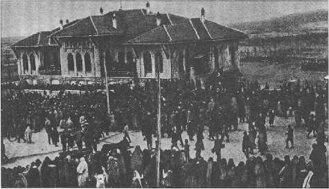
Yeni Türkiye kuruluyorken en önemli kararların alındığı Birinci Büyük Millet Meclisi binası ve Mustafa Kemal’in Meclis’in balkonuna çıkmasını bekleyen kadın, erkek, köylü, kentli, yaşlı o Meclis’e güvenen halk...
Ankara’daki Meclis’in, meclis sistemi olarak konvansiyonel ihtilâl meclislerinden önemli bir farkı vardı. Meclis üyeleri içerisinde muhalif gruplar vardı. Bu muhalif gruplar sadece sol veya muhafazakâr değildi; aynı zamanda Enver Paşa’yı tutan İttihatçı militan grup vardı. Mustafa Kemal Paşa’nın asıl uğraştığı takım da bunlardı. Bunların amacı Türkiye sınırlarının biraz ötesinde olduğu bilinen Enver’in Türkiye’ye girmesi ve etrafındaki grubu toplamasıydı. Açıkçası Sakarya Meydan Muharebesi kazanılana kadar da bu karaltı devam etmiştir. Meclis’teki muhalif gruplar içinde cumhuriyetçi eğilimlere karşı olanlar vardı. Hilafet ve hatta saltanatın muhafazasını düşünüyorlardı. Nitekim hilafetin kaldırılması İstiklâl Savaşı kumandanlarının bazılarını karşı karşıya getirdi. Özellikle Erzurum’dan gelen Müdafaa-i Hukuk grubu Mustafa Kemal, İsmet ve diğer milliyetçilerin karşısında muhafazakâr düşüncelere sahipti. Raif Hoca bu grubun başını çekenlerdendi. İleride Lazistan Mebusu Mehmed Sudi de böyle bir düşünceye katıldı. Bu grup ancak 1924 Meclisi’nde tasfiyeye uğramıştır. Millî Mücadele’yi yürüten grupların içerisinde bir insicam olmasa da muhalefetin zaman zaman savaşın idaresini ve alınması gereken zecri kararları bile güçlüğe soktuğu bilinmektedir. Dolayısıyla İstiklâl Savaşı dönemindeki meclis tarihte umulmayacak kadar erken demokrasi deneyimi vermiş sayılmalıdır. Çünkü imparatorluğun son zamanlarında meclislerde siyaset alanında bu olgunluk görülemedi. Aynı zamanda mecliste bir parti grubu gibi teşkilâtlandı ve gittikçe daha yapısal organik karaktere kavuştular. 1946 yılına kadar bu gruplaşma ve akımlar görülmeyecektir.
Tüm bu organizasyon için Ankara’nın seçilmesi tesadüf değildi. Bir defa Ankara hem Erzurum’dan hem Sivas’tan hem de Kayseri’den daha örgütlüydü, zengindi. Bize okul kitaplarında anlatıldığı, halen de işlendiği gibi fakir değildi. 19. yüzyılda tiftik ve tahıl ticareti konusunda büyük atılım yapmıştı. Demir yolu hattındaydı ki bu hattın Ankara’ya gelmesi için yerel tüccarlar tarafından yardımlar yapılmıştı. Demir yolu, Ankara’ya ciddi bir katkı sağlamıştı. Unutmamalı, Kayseri’nin de istediği demir yolu oraya ulaşamamış ancak hususî bir mekanizmayla Kayseri tüccarının imalatını Ankara’ya kervanla taşıyıp oradan itibaren tenzilatla sevki sağlanmış ve ancak cumhuriyet döneminde şebekeye bağlanmıştır.
19. yüzyılda yabancıların yazdığı seyahatnamelere bakılırsa görülür: Şehirde mezarları halen Ankara’da olan yabancı hekimler ve tüccarlar vardı. Şehirde, Fransa, Britanya, İran konsoloslukları da bulunuyordu. Şehrin özellikle Katolik Ermeni nüfusu ciddi bir ticaret potansiyeline sahipti ve banka kurulmuştu. Ankara Kalesi’nin ikinci duvarının içindeki Ermeni mahallesinde lüks bir yaşam vardı. Yabancı misyon okulları vardı. Kısaca Ankaralıların hali vakti yerindeydi. Ankara’da ve mülhak sancaklarda, Kayseri, Kırşehir’de tüccarlar ortaya çıkmıştı ki Vehbi Koç da bu gelenektendir. Zenginlik orada sonradan türememiştir. Bir yandan da tüm bunlardan bağımsız olarak, Ankaralılar Mustafa Kemal Paşa’ya bağlılık göstererek şehrin kapılarını açınca, orası makarr-ı hükûmet olarak kalmıştır.
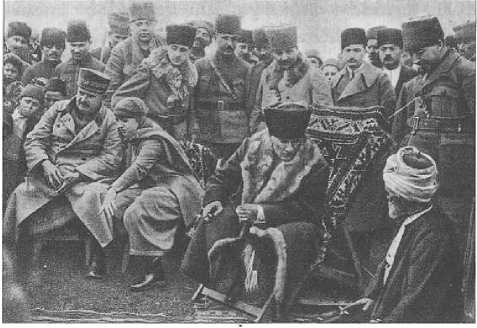
Edremit civarındaki Ergama Köyü’nde çocuklar ve ihtiyarlarla konuşurken, Şubat 1923.
Gelelim 23 Nisan’ın nasıl olup da millî egemenliğin kutlanması yanında, çocuklar için de bir bayram halini aldığına. Bu pek bayram havası içinde mi oldu, bilinemez. Harbin sonunda bir sürü çocuk yetim kalmıştı, hatta aralarında ailesiz kalanlar vardı. Durumlarını iyileştirebilmek için pek fazla imkân da yoktu. İnkılab rejimleri gelecek nesle önem verir. Aslında 19. ve 20. yüzyıl dönemecindeki tüm Şark dünyası böyledir.
İnkılabçılar çocuklarla ve kadınlarla çok alakadar olur. Bu yüzden Millî Egemenlik Bayramı’nı, Meclis çocuklara bağladı. Dünya tarihi ve kültürü içinde enteresan bir unsurdur, bize özgüdür ve yer etmiştir. Mustafa Kemal Paşa, TBMM’nin açılışından bir yıl sonra 23 Nisan 1921’de bugünün bayram olarak kutlanmasına karar verdi. 23 Nisan 1927’de ilk kez “Çocuk Bayramı" olarak da kutlanmaya başladı.
Millî Mücadele’nin Merkezi
Tekrar Ankara’ya dönersek, Ankara 15. ve 16. yüzyıllarda 20 bin nüfuslu bir şehirdi; bir önemli eyaletin, Tanzimat sonrası deyişle vilayetin merkeziydi. Bugünküne ilave olarak Kırşehir, Kayseri ve Bozok dediğimiz Yozgat sancağı da eyalete bağlıydı. Roma’dan beri Galatya eyaletinin başkenti Ancrya olarak önemli bir askerî merkezdi. Ünlü Galatya Krallığı’nda, yani Keltlerin istilası ile kurulan bu coğrafyada da zamanla Yunanca hâkim oldu. Ama gene de isimlerde, âdetlerde Galat-Kelt kültürü yaşamıştır. Şehrin dünya tarihinde önemli
Augustus Mabedi’nin cella duvarındaki bölümünde Latince “Res Gestae Divi Augusti”, ilahi Augustus’un yaptığı önemli, iyi işler diye başlayan testamentumda, sağ kanattaki Yunanca metinde ve şehrin festival ve törenlerini anlatan bölümde bu Yunan Kelt kültünün kalıntıları görülür.
Bizans dediğimiz Orta Çağ Roması, topladığı her taşı, hatta eski dönemin sanat eseri parçalarını (spolye-devşirme eser) dahi Ankara Kalesi’ni inşa etmek için kullandı. Şehir devamlı istila tehdidi altındaydı. Doğrusu Selçuklu döneminde de aynı şey yapıldı. Nitekim Timur’un orduları da şehri kuşattı ama şehri, şehirliler savundu. Ankara ahilerini oluşturan lonca mensubları bir kardeşlik dayanışması içinde hem şehri yönetiyorlardı hem de birbirleriyle çatıştıkları görülmezdi. Timur’un ordularına bile dayanmayı başarabilmişlerdi.
Profesör Özer Ergenç naklediyor: “Malumdur ki şehrin kadısı, tayin edilen valinin beratını kontrol eder." 17. asrın ünlü kadısı Vildanzâde, sancak beyi beratıyla gelen Celali eşkıyasının tayinini tanımadı ve şehre sokmadı.-53
İlginç bir şehirdi; gayr-ı müslimlerden hemen her cemaat vardı. Ankara Yahudileri özgün bir zümreydi. Hatta şehrin narh listelerinde uzak bir bölgeye has olan zeytinyağı görülür, çünkü Yahudi ailenin “koşer" yemek yasaklarından kurtulup istediği yemeği tatlısı, tuzlusu, etlisi ve yağlısıyla yapabilmek için çıkış yolu zeytinyağıdır. O yüzden Ankaralılar da zeytinyağlı mutfağını iyi tanırlardı.
Şehrin Ermeni tüccarları tiftik ticaretine karışmış, halk manifaktürle belini doğrultmuştu. Ankara 17. asır sonuna kadar kumaş ihraç merkeziydi. Romalı imparator Caracalla’nın hamamlarının kalıntılarının yanında,Polonyalısından İngiliz’ine kadar yabancı tüccar kabirlerine rastlanır. Topkapı Sarayı’nda düzenlediğimiz “Kremlin Hâzineleri" sergisinde bütün piskopos ve çar ornatları içinde Ankara sofu azametle yerini alıyordu. İsveç’in piskoposları bile Ankara sofundan cüppe giyerlerdi.
19. asır boyunca evvela Taşhan, bugünse İnkılab Müzesi olan İttihat Terakki Kulübü gibi binalar inşa edilmişti. Millî Mücadele hükûmetinin buralara yerleşeceği açıktı. Nitekim güneydeki İstasyon binası, Keçiören-Kalaba yolundaki Ziraat Mektebi, gene o civardaki Sarıkışla, vilayet konağı başta olmak üzere devlet daireleri ve bazı okullar Ankara hükûmetinin yerleşim yeri oldu.-54-
1919’un Aralık sonunda Ankara’ya gelen Mustafa Kemal Paşa, böyle bir şehir buldu; fakirlik de vardı, fakat belirli bir servet birikimi de yok değildi. Tozlu topraklıydı ve muhafazakâr görünümlüydü ama dünya ile teması olan bir şehirdi.
“Ankara nasıl başkent oldu?” sorusunun cevabı halen kolay verilemiyor, ama galiba bir husus açık: İzmir stratejik bakımdan pek olumsuz bir yerdeydi; 1920 başlarında İstanbul ve
Konya’daki muhalefetten ise ya hoşlanılmamış ya da çekinilmişti. Zafer Ankara’da kazanılmıştı ve galiba bu şehrin başkent olmasına İstiklâl Savaşı kumandanlarından çok evvel etraftaki bürokrasi karar vermiş ve telkine başlamıştı. Doğrusu Ankara da bunu hak etmişti. Arsa spekülatörlerinin kolay kazancı için aynı şey söylenemez.
Özetleyecek olursak, Millî Mücadele döneminde Ankara’nın tarifi herkesi yanıltıyor. Başkentimiz, geçen asırda Anadolu’nun en Avrupai şehriydi. 19 ve 20. asırlarda ticari bakımdan pek çok Anadolu şehrine göre dış dünyayla çok daha fazla teması vardı. Avrupalı doktorlar, konsolosluklar, yabancı okullar, Ermeni ve Katolik cemaatiyle zengin tiftik tüccarları buradaydı. Şehir, iş ve girişim kabiliyeti olan insanlarla doluydu. Bu şehir, bu özellikleri nedeniyle İstiklâl Savaşı’nın direniş merkezi olmaya kendi aday oldu.
Diğer şehirlere gelince Erzurum Kongresi, bizim bildiğimizden daha az delegeyle toplandı,Sivas’ta da çok kalabalık yoktu. Orada Mustafa Kemal Paşa’yı sıcak karşıladılar ama Sivas uzaktı, bir merkez olamazdı. Mustafa Kemal Paşa’yı, en büyük destekle karşılayanlar Ankaralılardı. Üstelik bu şehir, demir yolu bağlantısıyla da Anadolu’ya hâkim bir noktadaydı. Nitekim, belirttiğimiz gibi, Meclis hükûmeti burada kuruldu ve İstiklâl Savaşı’nın merkezi oldu.
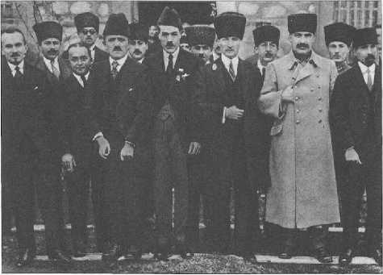
Millî Mücadele döneminde çekilen bu fotoğrafta Mustafa Kemal Paşa yanında Fevzi Paşa (Çakmak), Yusuf Kemal Bey (Tengirşenk), Refik Bey (Saydam),Celal Bey (Bayar) gibi arkadaşları olmak üzere, Rus ve Azerbaycan temsilcileri ile beraber görülmekte.
Geri Çekilmeyi Bilmek
Şu bir gerçek ki Gazi Mustafa Kemal Paşa harb tarihinde çok önemli bir askerdir. Türk askerî tarihinde geliştirdiği teknikler vardır. Bu teknik ve taktiklerin başında ricat gelir. Türk orduları ricat etmeyi bilmezler. Roma ordularının tarihte başarıyla gerçekleştirdikleri hemen her zaman çekilebilme teknik ve mevzuunu Türkler bilmezler. Ne zaman ki ricat durumu ortaya çıkar, bozgun arkadan gelir. Bunun aksi ilk defa İstiklâl Savaşı’nda görülmüştür. Taktik olarak ricat, İstiklâl Savaşı kumandanlarının, yani Osmanlı ordusunun genç tuğgenerallerinin ve tabii başta Gazi Mustafa Kemal Paşa’nın geliştirdiği bir üslûbtur, askerî siyasi üslûbtur ve aynı zamanda bir taktiktir.
Türk orduları son derece kanaatkâr ve dayanıklı, inatçı bir askerle savunmayı yapmaktadır. Ama bu savunmayı hücuma çevirmeyi de öğrenmişlerdir.
İstiklâl Savaşı
Başkumandan herkesin bildiği gibi ve tartışmasız kabul etmesi gerektiği üzere, Türk milletinin büyük adamlarından biridir. Büyük adamların üzerinde tetkik yapılır, farklı yorumlar yapılır, defalarca tetkikat yapılır, sorular ortaya atılır, cevabı aranır. Bu yapılmalıdır, zira, hiçbir şey nas olarak kabul edilemez.
Esasen tarih birisini bir yere getirip koymuş ise, onun üzerinde artık uydurma bilgi ile değerlendirme yapılamaz. Mohaç Zaferini kazanan insanın mareşalliği konusunda tartışma yapılmaz, böylesi bir tartışma abestir. Bazı halde bu davranış Riemann yahut Lobaçevski’nin matematikçiliğini tartışmaya açmak kadar budalaca bir davranıştır, “İstiklâl Savaşı’nı
İngilizler yaptırdı" diye ortaya çıkarsanız, aklı başında bütün insanlar gülerler, hatta en başta İngilizlerin kendileri gülerler. Çünkü böyle bir budalalık, böyle bir yorumun yeri yoktur!
Bunun fikir hürriyetiyle de alakası yoktur. Siz Sovyet Devleti’ni ve komünizmi lağvetmiş, takbih etmiş, tarihe gömmüş bugünkü Rusya’da, İkinci Dünya Savaşı’nın kumandan ve savaşçıları için ve İkinci Dünya Savaşı’ndaki muharebeler, zaferler için, hatta Çarlığın daha hâkim olduğu Birinci Dünya Savaşı’ndaki Rusya ordularının savaşları için öyle küçümseyici, yok edici ifadeler kullanırsanız savcıdan önce toplumda ağır tenkitlerle hayatınız kararır. Bu Fransa ve Britanya’da da böyledir.
Birinci Dünya Savaşı’ndan Sonraki Gerçek Diriliş: Millî Mücadele
Birinci Dünya Savaşı’ndan çıkan korkunç bilanço, kumandanlar da dâhil olmak üzere milleti ve seçkinleri elbette temkinli olmaya sevk etti. Ama Mustafa Kemal Paşa ve etrafı söz konusu olduğunda, temkinle birlikte aşırı bir atılım da vardı. Durum muhakemesi ve insanları etkilemek bir deha gerektirir. Herkes vatanı seviyor ve kurtarmaya çalışıyordu ama Mustafa Kemal Paşa lider nitelikleriyle halkı ve taşra ileri gelenlerini ikna edip bir araya getirmeyi başardı. 30 Ağustos’ta kesinleşen zafere bir günde gelinmediği açık. Millî Mücadele, Başkumandan Meydan Muharebesi’ne dek ilmek ilmek örülmüştür.
30 Ekim 1918 tarihli Mondros Mütarekesi, Türkiye için ağır işgal şartları getirmişti. Üstelik mütareke, sonraki dönemde işgal kuvvetlerinin gerekli gördüğü stratejik değişikliklere yol verebiliyordu, verdi de... 1918’in ağır şartları içinde bile Türk İmparatorluğu’nun ordu kumandanları, mülkî erkân ve politikacıları karşılarında sadece İngiltere ve Fransa’yı bulacaklarını zannediyorlardı ve tuhaf bir güvenme içindeydiler.
Oysa Britanya imparatorluğu yorgundu, Türkiye’nin işgalini yürütecek imkânlar, insan unsuru savaşçı açısından sınırlıydı. Dolayısıyla daha baştan taze kuvvet Yunanistan’ı yanma aldı. İstanbul’un işgalinden çok, Yunanistan’ı Trakya’ya hâkim kıldı. Nitekim 1921-22 yıllarında Sakarya Meydan Muharebesindeki mağlubiyetlerine rağmen Britanya, Yunanistan’ın İngiltere ve müttefikleri adına Trakya’yı da işgal isteğine ilk başta razı olmaz gibi görünse de fazla gecikmeden sempati gösterdi. Büyük Taarruz’dan biraz evvel Yunanlılar Tekirdağ’a asker çıkarmaya başlayacaktı. Ege’de ve Marmara’da da hiç beklenmedik bölgelerin işgaline yollanan Yunanistan, Britanya İmparatorluğu’nun sağ koluydu.
Bu durum Türkiye’nin millî güçlerinin, ordu, mülkî erkân ve hatta kasabalardaki halkın bir kısmının direnmesini, Türk kamuoyunun en örgütlü ve bilinçli unsuru sayılan ittihatçıların tekrar bir araya gelmesini sağladı. Mamafih savaş boyunca ittihatçılar ikiye ayrılmıştı: Bir kısmı Enver ve Talat Paşalardan vazgeçmezken, önemli bir kısmı Enver Paşa’yı, dönemini ve kişiliğini gözden çıkarıp istiklâl mücadelesi için Ankara’nın etrafında kenetlenecektir. Mustafa Kemal Paşa herkesi kucaklarken ilkelerinden taviz vermedi. İttihatçı kimliği gözden çıkardığını açıkça ilan etti ama Jön Türkler’in tümünü dışlama lüksü yoktu, üstelik onlara sempatisi de vardı ve kendisinden sayıyordu. Jön Türkler, imparatorluğun çökmek üzere olduğunu görmüşlerdi. Bunu önlemek için de kanuni ve hukuki bir idare istemişlerdi. Türkiye’yi, o kadronun öğrencileri kurdu.
1918 Türkiyesi, 1914 Türkiyesi’nden Çok Farklıydı
Şurası bir gerçektir; İtilaf Devletleri’nin gücü ve kazandıkları zafer ortadaydı ama kurmay sınıfımız onların zaafını da görmüştü. Her şeye rağmen, 1918 sonundaki Türkiye, yenilmiş olsa da 1914’ün Türkiyesi değildi. Uzun savaş yılları ve değişik coğrafyalarda savaş çok az sayıdaki Türk kumandanın ve politikacının direniş gücünü artırdığı gibi, İngiltere, Fransa ve İtalya gibi ülkelerde de Türkiye’nin geleceği ve ordusunun hattı harekâtı üzerinde değişik düşünen bireylerin, hatta grupların ortaya çıkmasına yol açmıştır. Britanya ordusunda da Türk askerler için olumlu görüş sahibi olanlar hiç az değildi.
İtalya, savaşın bitiminden beri, Britanya ve Fransa’nın egoist tavırları karşısında kendisini aldatılmış hissediyordu ve Anadolu’ya karşı sempatisi sadece sözde kalmadı. Ege’de Yunanistan’a verilenler en çok onu rahatsız etti. Çünkü ilk başta savaşa girmesi için o topraklar İtalya’ya vadedilmişti. O da müttefikleri olan Almanları gözden çıkararak İtilaf Devletleri safında yer almıştı.
Boğaz’ın Kumandası Yunanistan’a mı Verilecekti?
Şimdi bizim tarafta olup bitene bakalım ve önce bir-iki not düşelim. Son Sadrazam Tevfik Paşa’mn oğlu İsmail Hakkı Bey binbaşıydı, padişahın damadıydı, Ulviye Sultanla evliydi ve Anadolu’ya geçti. Mustafa Kemal Paşa ve etrafı, İsmail Hakkı Bey’in karşı taraftan, sadrazam babası ve padişah kaymbabasmdan bir mesaj getirdiğini düşündü. Oysa o, Anadolu’ya habersiz geçmişti; kendisini karşılayanlara “Savaşmaya geldim; her askerin, subayın görevi olduğu üzere, Anadolu kuvvetlerine katılmaya geldim” diyecekti.
Anadolu’dakiler onu kabul ettiler. İş buraya kadar gelmiş, hatta Damat Ferid Paşa’mn üvey oğlunun, Mediha Sultan’ın ilk eşinden olan oğlunun, dahi Anadolu’daki harekete katılmak istediği biliniyordu ve İngilizler de bunun farkındaydı. Yüksek Komiserlik’ten gelip, “Tabii ki gidebilir, kendilerine vize veririz” diye görüş bildirdiler. “Hatta zat-ı şahane isterse onu bile refakatle koruyarak Anadolu’ya geçiririz; lâkin İstanbul’un ve havzanın muhafazası için Yunan ordusu hazır bekliyor” dediler.
Bu son derece korkunç bir ihtimaldi. İstanbul ve Boğazlar’m korunmasının, kumandasının Yunan ordusuna verilmesi gündeme gelmişti. Bu bir tehditti ya da programdı.
Düzenli Ordu Kuruluyor
Bundan sonrası millî ordunun düzenlenmesi, gerilla kuvvetlerinin yönetilmesi ve ordu kurulunca da bunların saf dışı edilmesi gibi zor bir dönemdir. Tarihi kendi şartları içinde ele almak gerekir. Millî ordunun teşkili tamamlanmadan önce bu kuvvetlerin yaptıklarını dağınık bulsak da icraatını olumlu değerlendirmek zorundayız. Askerî tarih değerlendirmelerinin politik tutum tarafından gölgelenmeden yapılması gerekiyor.
Dönemi içinde düzenli ordunun gösterdiği varlık, diplomatik uğraşlarla paralel gitmiştir.
Yakın Türkiye tarihinin, İstiklâl Savaşı’mn büyük kumandanlarından Kâzım Karabekir Paşa’mn zaferleri, Bolşevik Rusya’nın TBMM tarafından kazanılması, gayrimemnun Fransa’nın Sakarya Meydan Muharebesi’nden önce tarafsız kalması ve bilhassa İtalya’nın konumu önemlidir.
1921 Anayasası
20 Ocak 1921 tarihinde modern Türkiye’nin ilk anayasası kaleme alındı, kabul edildi ve Ankara’daki TBMM tarafından yürürlüğe sokuldu. Nadir ve o derecede garip bir uzlaşı ile 1293 (M. 1876) Aralık tarihli imparatorluk anayasası ile bir arada yürürlükte olacaktı.
Uygulamaya bakıldığında, meşrutî monarşinin temel kanunu olan 1876 Kanun-ı Esasîsi’ne riayet artık mümkün değildi. Bu daha ziyade manevi bir bağlılığı ifade ediyordu. Zira Ankara’daki sistem, konvansiyonel denen meclis sistemiydi. Bakanları meclis, yani milletvekillerinin oyu belirliyor,hükümetin reisi de TBMM reisi (yani Mustafa Kemal Paşa) oluyordu. Ordu gene TBMM Hükûmeti’nin ordusuydu. Bununla birlikte dönemin uyumunu sağlayacak 1921 Anayasası metnindeki birtakım temel hükümlerin de tümüyle yürürlüğe girdiğini söylemek mümkün değildir.
Her şeye rağmen Türkiye’yi yöneten kadro, Millî Mücadele’yi kanuna ve meşru olmaya dikkat ederek yürütüyordu ve tarihin şartları içinde bu mücadele zafere ulaştıktan sonra da 1876 Kanun- ı Esasîsi hukuken 1922 Kasım’ında saltanatın lağvıyla ortadan kalkacak, 1921 Anayasası da yerini 1924 Teşkilat-ı Esasiye kanununa bırakacaktı. Şu ana kadar Türkiye Cumhuriyeti’nin en uzun ömürlü anayasası da bu 1924 tarihli metin olmuştur.
Bu 1921 Anayasası aslında radikal, kısa ve saltanatın biteceğini hissettiren bir beyanname olup âdeta Cumhuriyetin örtülü bir ilanıydı. 24 maddelik kanunun ikinci maddesi, Hâkimiyet-i Milliye’nin esas olduğunu belirtiyordu. Daha da önemlisi üçüncü maddede devletin adı kesindi; “Türkiye Devleti Büyük Millet Meclisi tarafından idare olunur” denmektedir. Süleyman Hayri Bolay Hoca’nm “dirayet tefsiri yapan bir öncü” diye selamladığı Elmalık Hamdi Hoca,^^ Taha Akyol’un da vurguladığı gibi, Hâkimiyet-i Milliye’nin hilafete üstün (faik) olduğunu belirtmiştir. Yeni düzeni kabul edenler arasında bu gibi medreseliler de vardı.
Teşkilat-ı Esasiye Kanunu’nun hemen hiç uygulanamayan çok ileri hükümleri vardı. İller ve bucak düzeyinde eğitim, sağlık gibi işleri ve bütçelerini dahi bölgedeki şûralar yapacaktır. Ancak bu şûralar hiçbir zaman kurulamadı. Daha ilginç bir hüküm vardı; başkentte devamlı yasama yapan organ bütün meclis değil, her ilden seçilen birer mebusun oluşturduğu devamlı bir şûra olacaktı. Batı demokrasilerine yabancı bu hüküm Sovyetler Birliği’ndeki “presidium” gibi bir organ olabilirdi fakat hiçbir zaman tatbik edilmedi.
Cumhuriyete geçiş belgesi gibi olan 1921 Esas Teşkilat Kanunu hiç şüphesiz meclis üstünlüğünü yansıtmaktadır. Saltanatın kaldırılması, Lozan Antlaşması’nm onaylanması ve cumhuriyetin ilanı ile bu belge artık yetersiz kaldı. Cumhuriyete geçiş beyannamesi yerini 1924 Anayasası’na terk edecektir. Tabii meclis üstünlüğü sistemi de yerini yürütme ve yasama arasındaki ayrılığa bırakmıştır.
1921 Anayasası aslında Anadolu mücadelesinin ne kadar hukuka dikkat eden, ama cumhuriyetçi fikirlerini de açıklamaktan çekinmeyen bir hareket olduğunu gösterir.
İnönü Muharebelerinin Birincisi
İnönü Muharebeleri, düzenli ordu ve Millet Meclisi Hükûmeti’ne bağlı kuvvetlerin bir hareketidir, bir gösteridir. Nihai zafer değildir, nihai bir meydan muharebesi de değildir. Orada öyle bir hazırlık da yoktu.
Esas meydan savaşı Sakarya’dır. Uzun bir düzenli ricat -ki Türk ordusu orada ricatı öğrenmiştir- ve stratejik olarak başarılı bir uygulamadır. O nihai noktada Sakarya Meydan Muharebesi sahici bir meydan savaşıdır, uzun bir savaştır. 22 gün 22 gece sürmüştür. Sonraki safha Başkumandanlık Meydan Muharebesi dediğimiz Afyon Kocatepe’dir.
Ancak Ocak ve Mart aylarının zor iklim şartlarında yapılan İnönü Muharebeleri’nin moral ve motivasyon açısından çok ciddi katkıları vardır. Savaşın olabileceğini ve devam edeceğini göstermesi bakımından önemli olup başarılı savunma savaşlarıdır. Nitekim diplomasiye yansıyan önemli sonuçları da olmuştur.
Yunan genel saldırısı Ocak 1921’de başladı. Bu Yunan ordularının üçüncü toplu askerî hareketiydi. Çerkez Ethem henüz sahadaydı ve Meclis ordusunun nizami kuvvetler halinde savunma sistemini düzenlemesi, Ethem’in Yunanlılara sığınmasına neden oldu. Bizim İstiklâl Savaşı tarihinin en tartışmalı konusu İnönü Muharebeleri’dir. Bilhassa 1946’dan sonra kuvvetlenen muhalefette sadece kıyıda köşede kalmış eski gruplar değil, D Plilerin de ortaya çıkmasıyla İnönü Muharebelerinin tarihteki önemi azaltılmak istendi. Bu savaşın aslında bir yenilgi olduğu, Mustafa Kemal Paşa’nm (Atatürk) aslında İsmet Bey’e iltifatı olarak başarı şeklinde takdim edildiği söylendi. Bir kumandana taltif veya takdir hiçbir şekilde uydurma bir askerî episode yaratmaya imkân vermez.
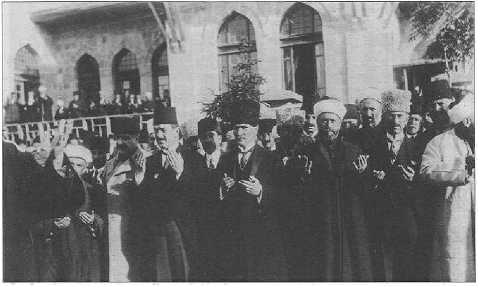
Ramazan Bayramı esnasında ordunun başarılı olması için TBMM önünde Abdullah Azmi Efendi tarafından okunan duaya katılan Gazi Mustafa Kemal Paşa ve arkadaşları, 28 Mayıs 1922.
Saldırıda olan Yunan kuvvetlerine karşı İsmet Paşa’mn savunma sistemindeki inadının ve tutarlığmm, bir ricata karşı direnişinin rol oynadığı görülüyor. Öyle görülüyor ki Yunan ileri kuvvetleri merkezle bağlantılarını kaybettikleri için birbirlerinden habersiz bir şekilde bu savunmanın karşısında geri çekilmek yolunu seçtiler, onlar geri çekildikçe de Meclis kuvvetleri kendilerini takip etti. Birinci İnönü Muharebesi nihayet düşmanın ricatı ve Türk kuvvetlerinin galebesiyle sonuçlanmıştır. Aynı zamanda güneyde Çerkez Ethem kuvvetlerinin de bu şekilde sahneden çekildiği anlaşılıyor. Çünkü yeni katıldıkları Yunan ordusu içinde fazla savaşma imkânları kalmamış olmuştu ki onlar için de daha hayırlı bir neticeydi.
Maalesef sevkiyat çok düzgün gitmemişti. Buna rağmen İnönü Muharebesi’ndeki başarı memleketteki maneviyatı yükseltti ve millî savunma meselemizin oturduğu anlaşıldı. Meclis Hükûmeti’nin ve bizatihi meclisin morali yükseldi. Bir yandan Doğu Cephesi’ndeki başarılar da bundan öncekim perçinliyordu. Takip eden 23 Şubat’ta Ardahan ve Artvin’e Türk birlikleri girdi. Anteb savaşı zaten sona ermişti. Bu menkıbevi direniş Şubat ayı başlarında sona ermiştir. Güney sınırlarında Fransızlar açısından o kadar verimsiz bir savunma ve o derecede pahalıya mal olan bir işgal olmuştu ki Fransa da cepheden çekilmeye karar verdi. Bu durum Ankara Müsalahası’na yol açtı. Bir müddet sonra Henry Franklin-Bouillon Ankara’ya gelecekti.
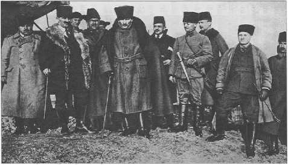
Mustafa Kemal Paşa, İnönü Muharebeleri esnasında, muharebe alanını teftiş ediyor, 1921. En sağdan itibaren fotoğraftakiler: Osman Tufan
Bey, Yaver Muzaffer (Kılıç), Şemsettin Bey (Taner), Arif Bey (Ayıcı), Mustafa Kemal Paşa, Tevfık Bey (Bıyıklıoğlu), Yaver Salih Bey (Bozok).
İnönü Muharebelerinin İkincisi
İnönü Muharebelerinin stratejik olarak düşmanı ne derecede durdurduğu bakımından tartışılması sonradan çıktı. Fakat Birinci İnönü’de, ilk defa nizami ordunun direnişi söz konusudur. Orada ne kadar muvaffak oldu, olmadı halen tartışılmaktadır. Oysa bu ilerlemeyi durdurma çabasının sonunda biliyoruz ki yine gerileme düzenli bir şekilde devam etti. Bu Türk tarihinde ilktir, tektir. Çünkü Türk milletinin orduları, Osmanlı İmparatorluk orduları dâhil, çekilme bilmezler. Çekilme derhal bozguna tedvir eder. Mesela, Balkanlar’daki İzladi Derbendi’ndeki kayıptan sonra, soluğu Varna’da aldık ve orada derlenip toparlanıp savaşı yürüttük. Birleşik Haçlı ordusu başında Hünyadi Yanoş gibi Macarlar vardı ve ordunun müthiş bir daimî kuvveti vardı.
II. Viyana Muhasarası da bunun tipik örneğidir; Polonya Kralı Sobieski’nin Kahlenberg tepesinden Viyana surlarına doğru hücumu Osmanlı ordusunu dağıttı. Fakat ondan sonraki derlenme toplanmalarla Karlofça Barışı’na kadar 16 yıl savaştık. Ama burada, 1920 Anadolusunda ilk defa düzgün bir çekilme söz konusudur. Bu tam Roma imparatorluk lejyonlarının recedere’sidir (geri çekilme düzeni). Balkan Savaşı’nda yapamadığımız taktiği daha sonra uyguladık. Birinci ve ikinci İnönü muharebelerinde İsmet Paşa’mn başarısız olduğunu, Mustafa Kemal’in gidip duruma el koymak durumunda kaldığını söyleyenler var. Ancak bunu söyleyenlerin hiçbirisi askerî mütehassıs değil. Taraftarlar veya muhaliflerin yazdığı ve konuştuğu askerî tarih ikna edici olmaktan uzak daha vahimi ciddi tetkik yok. Maalesef bazı noktaları ispat için ecnebi kumandanların ve mütehassısların raporlarına dayanıyoruz.
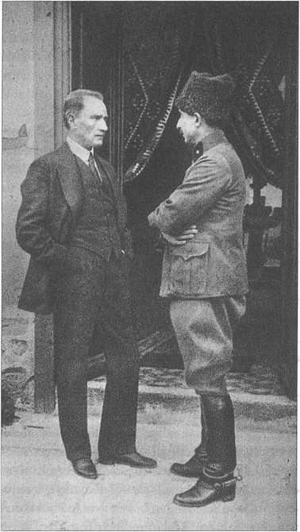
İkinci İnönü zaferi sonrası Garp Cephesi Kumandanı İsmet Paşa ile, 1921.
Londra Konferansı
Millet Meclisi Hükûmeti’nin (TBMM) çalışma düzeni ve ilkeli işleyişi dış dünyada etkisini gösterdi. İtilaf Devletleri Sevr’in Ankara tarafından reddini hesaba katmak zorunda kaldılar. Ancak toplanacak Londra Konferansı’mn bir ciddi tashih değil, oyalama olduğu anlaşılıyordu.
Hatta Londra Konferansı bir aldatmacadan ibaretti ve Mustafa Kemal Paşa da bunu biliyordu. Başkumandana göre İtilâf Devletleri’nin, Bekir Sami Bey’e imza ettirdikleri sözleşmelerdeki maddelerin, Sevr projesinden sonra aralarında imzaladıkları Üçlü Anlaşma (Accord tripartite) adı verilen ve Anadolu’yu nüfuz bölgelerine ayıran bir anlaşmayı hükümete başka adlar altında kabul ettirme maksadına dayandığı açıktı ve hiçbir şekilde kabul edilemezdi. Üstelik konferansa İstanbul’u da çağırarak ikilik yaratmayı planlıyorlardı. Bunlar bilinen şeylerdi lâkin yine de bu konferansa iştirak edildi. Zira bu iştirak, Ankara için resmen tanınmak anlamına gelecekti ve de İtilaf Devletleri’nin “Türkler savaş peşinde, barış istemiyorlar” yalanının reddedilmesi demek olacaktı. Hatta orada bir müspet gelişme daha oldu; sözü ilk önce İstanbul heyetine verdiklerinde Tevfik Paşa, “Türk milletinin gerçek temsilcisi Ankara Hükümeti’dir. Sözü Bekir Sami Bey kardeşime veriyorum” gibi çok önemli bir çıkış yaptı. Bunun üzerinde tarihçilerin durması gerekir.
Londra Konferansı’nda Bekir Sami Bey, Ankara’ya sormadan İngiltere, Fransa ve İtalya diplomatlarıyla temas ve görüşmelerde bulunarak, her biriyle ayrı ayrı birtakım sözleşmeler imzalamıştı. Kuşkusuz Bekir Sami Bey’in ortaya koyduğu lüzumsuz uzlaşıcı tutumu Başkumandan Mustafa Kemal Paşa reddetmiş ve Dışişleri Bakanlığı’ndan çekilmesini istemiştir.
Tarihî Bir Meydan Muharebesi: Sakarya
Sakarya Meydan Muharebesi öncesindeki çatışmalar Büyük Millet Meclisi ordularının Kütahya ve Eskişehir hattında yenilgisiyle sonuçlandı. Burada ilginç bir strateji uygulandı.
İlk defadır ki “mevzii” yenilgi bozguna dönüşmeden, düzenli bir ricata dönüştürüldü. Türk ordularının bu dönemdeki yeni bir stratejisidir. Her birlik, yamndakiyle hareket etse de kendi mevziini savunmakla mükelleftir.
Bu taktik sonuna kadar izlenecektir, yanındaki birlik çekilse de ona uyulmayacak, direnişe devam edilecek ve dolayısıyla bütün askerî teknik kuralların üstünde bir vatan müdafaası, “Hatt-ı müdafaa yoktur, sath-ı müdafaa vardır; o satıh, bütün vatandır” anlayışıyla savaşa devam edilecektir. Dolayısıyla geri çekiliş bir bozguna dönüşmemiştir.
16 Mart 1921 Moskova, 13 Ekim 1921 Kars Antlaşması’yla Doğu Cephesi’ni teminat altına alan Türkiye, 1920 Mayısı’nda da Fransızlarla bir ateşkes antlaşması yaparak Çukurova Cephesi’ni teminat altına almıştı.
Ama diğer yandan Ankara’nın yakınlarına kadar çekilen ordu, Büyük Millet Meclisi’nde bir muhalefetle karşılaştı. Meclis Hükümeti sisteminin bütün katılığıyla işlediği tek devrim ülkesi Anadolu topraklarıdır. Mustafa Kemal Paşa’mn kumandan ve siyasi kişiliği bu noktada galip geldi ve Meclis’ten tam yetkiyi aldı. Bazılarının istediği gibi Başkumandan kaymakamı değil, kendini tam yetkili kumandan tayin ettirdi. Tekalif-i Milliye emirleri yayınlandı ve tatbik edildi. Bir ara o kadar karamsar bir hava oluşmuştu ki, Meclis’in Kayseri’ye taşınması ihtimali dahi dile getirilmişti. Her halükârda Meclis ve hükümetin çekilmemesini isteyen bir grubun sözcülüğünü Doğulu milletvekili Diyab Ağa kendine özgü üslûb ve nutkuyla yerine getirdi.
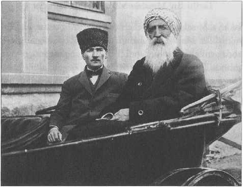
Gazi Mustafa Kemal Paşa ve Dersim Vekili Diyab Ağa Meclis’e giderken, 22 Mart
1921.
10 Temmuz-25 Temmuz arasındaki Kütahya ve Eskişehir yenilgisinden sonra, bütün birlikler yeni ricat düzeniyle Sakarya Nehri’nin doğusuna çekilmişti. Ama dünyanın bozuk dengelerinin ortasında, yeni Türkiye stratejik yönden bir dehayla hayata doğmaktaydı. Sakarya Irmağı’nın doğusunda başlayan direniş, 100 kilometre genişliğindeki cephede atılan topların yer yer Ankara’dan duyulmasına bile sebep olmaktaydı. 23 Ağustos ile 13 Eylül arası, yani 22 gün 22 gece süren savaş 900 yıllık Türkiye tarihi açısından en kanlı ve en inatçı direnişti. Fatihlerin torunları ana yurdu savunmayı da bilmişti.
Anadolu’ya gelen Yunan ordusunun herhangi bir istilacı orduya benzemeyen avantajları vardı. Silah üstünlüğüne sahipti, askerler uzun harb yıllarının yorgunu değildi, hem Marmara’dan hem de Ege’den ikmal yolları açıktı ve kahir ekseriyette olmasa bile, geçtikleri yerlerde onları destekleyen Helen nüfus bulunuyordu.
Bu ordunun eski Helen dünyasını kurtarmak ve kurmak gibi bir ideali de (Megali İdea) vardı ki ağır yenilgiyle bu rüyadan vazgeçeceklerdi. “Megali İdea” nın “Küçük Asya faciası” na dönüşmesi, modern Yunanistan tarihinin en çelişkili gelişmelerinden biridir.
Sakarya Meydan Muharebesi’ndeki strateji, daha gevşek olan Yunan güney hattına gizlice yönelmekten ve kuvvetleri süratle yığmaktan geçiyordu. TBMM ordusunun sayıca tek üstünlüğü olan süvari kuvvetlerinin süratli ve ani hareketiyle, iki tarafın inatçı savaşı çok kısa sürede Yunanların gerilemelerine neden oldu, ama bu gerilemenin Eskişehir’in ötesinde Afyon hattında durduğu da bir gerçektir. Ordunun donatımı başlamıştı. Mühimmat ve teçhizat sıkıntısı içindeki Meclis Hükümeti bu zaferle kendine geldi. İstanbul Hükûmeti’nin azlettiği ve hakkında idam fetvası verdiği Mustafa Kemal Paşa, muzaffer ve güçlü kumandan olarak Türkiye Büyük Millet Meclisi’nden “Gazi” unvanını ve Müşir (Mareşal) rütbesini aldı.
Yurt içinde olduğu gibi bütün İslam dünyasında, İtilaf Devletleri ülkelerinde ve hatta Britanya’da da askerler ve diplomatlar arasında farklı değerlendirmelerin ortaya çıktığı görüldü. Sakarya Meydan Muharebesi’nin başında Yunanistan’da hükûmet değişmişti. 1920 sonunda Venizelos seçimleri kaybederek ülkeyi terk etmiş, Birinci Dünya Savaşı boyu Almancı olarak gözüken Kral Konstantin geri dönmüştü. Kral,Sakarya Meydan Muharebesinden evvel dönemin vahim bir hatasını tekrarladı. Rus Çarı II. Nikola, Birinci Dünya Savaşı’nda nasıl üstüne vazife olmayan bir rol üstlenmiş, savaşı payitahtında ülkesini yönetmekle geçireceğine başkumandan olarak cepheye gidip ipin ucunu kaçırmışsa Kral Konstantin de başkumandanlığı alarak İzmir’e gelmiştir. Profesyonel askerler son derece rahatsızdı ve bu sefer savunma hatları kuvvetlendirildi.
İstanbul Hükümeti ve hassaten Tevfik Paşa, Padişah VI. Mehmed’in Anadolu ordusunu ve Başkumandanı tebrik etmesini istedi. Bu açıkça yapılmadı; son zamanda bazı tarihçiler Sakarya gazilerine madalya gönderildiğini söylese de belli değildir ve kuytuda kalan bir olaydır. Herhalde askerî taltif bu kadar gölgeli yapılırsa duyulmuyor.
Fransa ve Ankara Antlaşması
Fransa, başlayacak olan Millî Mücadele’de Anadolu Hükûmeti’nin yanında değilse bile, tarafsız olmayı seçti ve bir müddet sonra kendisinin Kilikya’da (Çukurova) uğradığı bozgun üzerine müttefiki Britanya’nın oyunlarına gelmekten vazgeçti. Nihayetinde Ankara ile anlaşmayı tercih etti. Hiç şüphesiz ki daha başından bir kenara itilen, savaş boyunca yaşadığı bütün facialar, fedakârlıklar ve Britanya-Fransa blokunu fazla ilgilendirmeyen Avusturya’ya karşı gösterdiği direniş ve zaferi de görmezden gelinen İtalya da Anadolu Hükûmeti’ne taraftar olmayı seçmiştir.
26 Ağustos 1071’den 26 Ağustos 1922’ye...
Son yıllarda yakın Türk tarihi üzerinde, Frenklerin “demystification” dediği, “sözde” tabu düşünce ve yorumları yıkma havası esiyor. Evvela şunu söylemek gerekir ki yakın tarih üstünde bu tür eğilimler ilkin Kara Avrupası’nda başladı. O toplumlarm ve Britanya’nın abartılı tarihlerinin, pek övündükleri demokratik gelenek ve miras (!) ile bağdaşmayan rejimlerle ve olaylarla dolu olması, tarih yazımını yeniden düzenlemeye ve bazen daha da aşırı giderek orta eğitimde ağırlıklı olarak, hatta bazen münhasıran yakın tarihin okutulmasına neden oldu.
Öyle ki Bourbon Hanedam’mn tarihini ve ünlü kralları sıralamayı bilmeyen Fransız öğrenci veya 1618-48 arasındaki 30 Yıl Savaşları ve Westfalya Barışı’nm önemini kavrayıp ifade edemeyen Alman-Avusturyalı öğrencilerin varlığı işte bu eğitimin sonucudur. Buna rağmen şunu da eklemek gerekir ki tarih bilimi, tarih araştırma yöntemleri o ülkelerde yine de sağlam olduğu için, yakın tarihçiliğin tabu yıkması bir maskaralık haline dönüşmemiştir. Bizdeyse bu teşebbüslerin grotesk (mudhik) dereceye döndüğü anlaşılıyor.
Mesela, Çanakkale üzerine şöyle gülünç bir iddia çıktı. “250 bin kişiyi -ki bu rakam sadece şehitleri değil, savaş dışı kalan askerlerin toplam sayısını belirtir- şehit vereceğimize, zaten bu zırhlılar harbin sonunda geçmediler mi, başından bıraksaydık, İstanbul’da efendi gibi otururduk” bile diyorlar. Biraz İstanbul’un tarihî demografisine, iktisadi yapısına baksınlar. 1914 sonu veya 1915 başında İngilizler Boğaz’ı geçip İstanbul’a girse, tepeden de Rusya ile birleşseler, şehrin yarıya yakın gayrimüslim nüfusu gelen Rus ve Britanyalı yerleşimcilerle kısa zaman içinde hızla çoğalırdı. İstanbul’u da Türkler bir daha ancak anılarda ve turistik gezilerde görürdü.
Şimdi bir de 30 Ağustos sorunsalı çıktı. Memlekette sağdan soldan, “30 Ağustos’u kaldıralım” veya “Lozan zafer değil hezimet” deniyor. Birinci Dünya Savaşı’mn son barış muahedesiyle, 26 Ağustos’ta Büyük Taarruz ile başlayıp 30 Ağustos’ta elde edilen zaferi bu şekilde değerlendirmek, abes bir hükümdür. Lozan’da zafer olmaz, çünkü diplomatlar birbirine süngüyle saldırmıyorlar. Lozan’da şartların elverişliliği ölçüsünde bir uzlaşma söz konusudur. Lozan’da savaşın süngüyle çizdiği sınırı onaylattık; tek kazanç kapitülasyonların gürültü ve kavgayla kaldırılışıdır. Kimsenin kimseye fazla diretecek gücü yoktu, bütün Avrupa ve Türkiye yorgundu. “30 Ağustos” bir zaferdir. Çok ülkede böylesi yoktur; böylesine sahip olanlar da bunu kutlar. Fransa’nın zafer günlerini (L’armistice 1918) ve Rusya’nın zafer günlerini (7 Mayıs 1945) onlar kutlar, başkaları da tebrik eder.
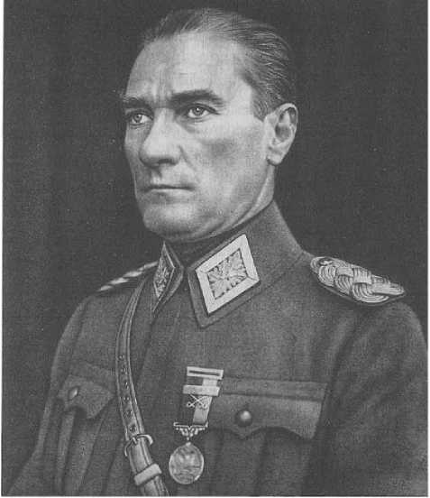
Türkiye Büyük Millet Meclisi tarafından “Mareşal” rütbesi ve
“Gazi” unvanı ile taltif edilen Mustafa Kemal Paşa mareşal üniforması ile, 19 Eylül 1921.
“30 Ağustos Zaferi”yle işgal altındaki Türkiye’nin, yani Anadolu ve Trakya’nın siyasi coğrafyası değişti. Ordular tutabildiklerini tuttular, Türkler de ilerledi. Tam donatılmış bir Yunan ordusu Selanik ve civarında saldırı için değil, ama Batı Trakya’yı elde tutmak için hazır bekliyordu. İstiklâl Savaşı kumandanları Fevzi ve Kâzım Karabekir Paşalar fevkalade temkinliydiler. Onlara göre çok daha atılımcı olan Gazi Mustafa Kemal Paşa dahi bu sınırlara ulaştıktan sonra temkinli olmak zorundaydı.
Büyük Taarruz öncesinde uzun bir hazırlık devresi vardı. Ankara Hükümeti büyük bir sabır ve sert kanunlarla savunma tedbirleri aldı ve yeni bütçe uyguladı. Şurası açıktır ki milletin morali düzelmişti.
Britanya kabinesinin Yunanistan’ı destekleyeceği ve Sevr’i dahi lehlerine düzenleyeceğini açıklaması yanında Yunan savaş bütçesini ve mühimmatını artırması, TBMM Hükûmeti’nin direnme konusunda bütün dünyaya bir açıklama (âdeta bir universalia) vermesine neden oldu.
Piyade tüfeği miktarındaki ufak bir fazlalığın dışında silah, hatta asker sayısı bakımından dahi Yunan ordusuna göre üstünlük yoktu ve tek üstünlük yine süvari kuvvetleriydi.
Savaş günü Ankara’daki diplomatik çevrelerden ve gazetecilerden gizlendi. Başkumandan gizlice Akşehir’e intikal etti ve o akşam sözde bir çay ziyafeti düzenlenmişti. Genelkurmay Başkanı Fevzi Paşa (Çakmak), Garp Cephesi Kumandanı İsmet (İnönü), 1. Ordu Kumandanı Nureddin Paşa ve 2. Ordu Kumandanı Yakup Şevki Paşa’ydı. Dış dünyada Türklerin müstahkem mevkileri bertaraf edeceğine inanılmıyordu fakat beklemedikleri oldu.
26 Ağustos günü erken saatte başlayan top atışını arkadan bir hücum ve ilk aşamada güneyde, Çal köyünde Yunan tümenlerinin önemli kısmının çembere alınması ve kuzeyde Eskişehir mıntıkasındaki Yunan işgal kuvvetlerine hücum izledi. Savaş ani saldırıyla başlamıştı ve öyle de devam etti. Aslında başarılı bir asker olarak tanınan Başkumandan General Trikopis ve karargâhı 2 Eylül’de Uşak’ta esir alındı ve öncü kıt’alar İzmir’e girdiler. Birinci Ordu Kumandanı Nureddin Paşa’ydı. 9 Eylül’de ise Gazi Mustafa Kemal Paşa ve kıt’alar İzmir’e törenle girdi.
1526’nm 29 Ağustos’undaki Mohaç zaferi Avrupa tarihinin değiştiği bir olay, Türklerin imparatorluğunun zirve noktası olarak kabul edilebilir. Hemen hemen 400 yıl sonra 30 Ağustos 1922’deki Dumlupmar Başkumandanlık Meydan Muharebesinde kazanılan zaferse, Türklerin Küçük Asya’daki anavatanlarını savunmalarının zaferidir ve beklenen bir zaferdir. En başta Başkumandanımız ve subaylarımız bunu bekliyordu. Aslında ikinci Dünya Savaşı yıllarında Mussolini’ye karşı başarılı şekilde Yunanistan’ı savunan, Yunan ordusunun seçkin ve ünlü komutanı Ioannis Metaksas “Oraya çıkmayın, iki günde Türk ordusu karşınıza çıkar, sizi mahveder” demişti, dediği gibi oldu.
Hatta şunu da ifade edebiliriz; 26 Ağustos
1071 Türklerin Anadolu’ya giriş tarihidir; 26 Ağustos 1922 ise Anadolu’dan asla çıkmayacağımızın belgesidir; zaten çıkamayacak durumda olduğumuz da açıktır.
Türk Kurtuluş Savaşı eski bir devletin yapısı içinde devam etti. Savaşı yürüten genç kumandanlar kadar erbaş zümresinin (onbaşı, çavuş) de Birinci Dünya ve Balkan Savaşı’mn tecrübelilerinden olduğunu unutmamak gerekir ve nihayet Ankara Hükümeti genel müdüründen telgrafçısına kadar Osmanlı bürokrasisinin seçkinlerini bir araya getirmiş veya mevcudu istihdam etmeyi bilmiştir. İsmi geçen kumandanlar yanında o tarihte albay olan, sonra Budapeşte ve Vichy Fransası’nda sefirlik yapan Behiç Bey’i de zikretmemiz gerekir. İmkânsızlıklar içindeki Türk demir yollarının bu savaşın sevkiyatma yetişebilmesi onun ve takımının sayesindedir. Deha ancak çevresiyle parlar. Büyük adamların ideali kitlenin itaati ve tasvibiyle gerçekleşebilir. Gazi Mustafa Kemal Paşa geniş kitleyi kazanabilmişti.
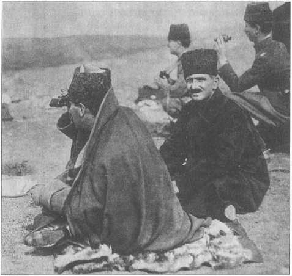
Zafer Tepe’den Duatepe’de cereyan eden muharebeleri takip ederken yaveri Salih Bey (Bozok) ile birlikte, Ankara, 9 Eylül 1921.
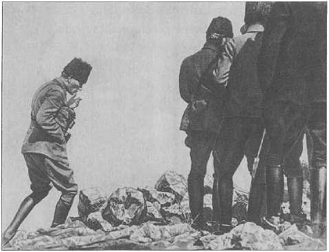
Başkumandan Gazi Mustafa Kemal Paşa Kocatepe’de, 26 Ağustos 1922.
Büyük Taarruz
Büyük Taarruz tam da bu toparlanma sonrasındaydı. Üstelik ordumuz askerî savunma ve hücum özelliklerinin ikisini de haiz durumdaydı. Gerçekten iyi hazırlanmış, planlanmış bir muharebedir. Karşıdaki ordunun ne yapacağı tahmin edildiğinden tam anlamıyla bir kurmaylar muharebesi olduğu söylenebilir. O planı yapanların içinde sadece bir kumandan, bir görüş yoktur, bir sürü görüş vardır. Onların muhassalası söz konusudur. O muhassalayı yapan adam ise o büyük mareşal Gazi Mustafa Kemal Paşa’dır.
Büyük Taarruz başlamadan evvel kurmaylar planlamayı yaparken, Gazi Mustafa Kemal’in planına hemen herkesin itiraz ettiği, “Bu çok iddialı, bunu gerçekleştiremeyiz” dediği, Gazi’nin ise “Ya bunu gerçekleştiririz ya da gerçekleştiremezsek zaten bittik” dediği malumdur.
Başkomutan tecrübeli ve tecrübenin yanında hakikaten keskin ve atılgan zekâlı bir kumandandı ve bu stratejisi zaferi getirmiştir. Çevirme harekâtını iyi biliyordu ve aslında savaş bir gün içinde halledilmişti. Karşı tarafın savunması tarumar ediliyor ve bitiyordu. Üstelik tarumar ettiği kumandan da Yunanistan’ın Küçük
Asya’daki en önemli, en kabiliyetli generallerinden biri olan Trikopis’tir. Bunu bildiğimiz takdirde görürüz ki, bu savaş büyük, üstün bir kurmay savaşıdır. Burada her durum önceden mütalaa önceden edilmiş, ele alınmıştı.
İlginç bir şekilde topçu sayısı bizde fazlaydı. Fakat buna karşılık Yunanlılarda piyade fazlaydı. Birtakım silahların dengesinde de Yunan tarafı üstündü. İki ordu arasındaki çok büyük farklar donatımda ortaya çıkıyor. Fakat hiç tartışılmayacak bir şey, Yunan ordusunun mekanize nakliyatının daha güçlü oluşudur. Bu harbde keşif için kullanılan Yunan uçak sayısı da tabii ki daha fazlaydı.
Zafer bizim olunca Anadolu halkından olup Yunanlıları destekleyen ve Yunan ordusuyla birlikte Afyon’dan beri ricat etmek zorunda kalanlar da vardı.
Doğrusu, Büyük Taarruz başlarken bu kadar kısa sürede sonuca ulaşacağını büyük ihtimalle Türk tarafı da tahmin etmiyordu. Çünkü o günden bazen kayıtlı, bazen şifahi bilgilere baktığımız zaman bunun daha uzun süreceği, bu kadar hızlı bir bozgun olmayacağı ve yine bir vakit alacağı düşünülüyordu.
Zafer Bayramı
Bu bir ordu günüdür. Dünyada da örnekleri vardır. Mesela Rusya’da 7 Mayıs’ta Zafer Günü kutlanır. Bizde ise 30 Ağustos Zafer Bayramı vardır. Esasında 30 Ağustos, bir bakıma Birinci Dünya Savaşı’nm bitişi demektir. Çünkü 1918’de Mondros imzalanmıştır ama bir barış antlaşması henüz yoktu ve biz sonrasında dayatılan Sevr’e de karşı geldik. 30 Ağustos’ta bu reddediş perçinlendi. Sonrasında mütareke için Mudanya’ya gittik, muahede olarak Lozan’a gittik, sulh sağlandı ve akabinde ise yeni Türkiye kuruldu.
Ayrıca bir tesadüf değil, coğrafyanın, iklimin, muharebe şartlarının ve gün seçiminin etkisiyle olacak, ağustos ayı bizim tarihimizde zafer günleriyle doludur. Malazgirt var en başta; sonra Mohaç var. Avrupa’daki en ileri noktaya gidiştir. Başkumandan Meydan Muharebesi de çok önemlidir; biz bunu kutluyoruz ve kutlanacak da.
Ordu her memleket için önemlidir. Ancak nüfusu kalabalık, coğrafyası geniş ülkeler için önemi daha fazladır. Türkiye’nin medeniyet tarihi açısından da askerlik çok önemlidir. Çünkü Türkler çok değişik memleketlerde hükümranlık kurdular; mesela, bugünkü Afganistan, bugünkü İran... Buralarda halkın çoğunluğu Türkçe konuşmuyordu. Hatta bürokraside Farsça kullanılırdı. Ancak ordu Türkçe konuşurdu. Her zaman için Türk’tü, Türk ordusuydu ve o ordu milletin tarihinde bir devamlılık sağladı. Tabii 18. yüzyıldan itibaren dünyadaki uygarlık çizgisi sıçramaya geçti ve biz de 18. ve 19. yüzyıllarda bir medeniyet değişikliği yapmaya çalıştık. Bu, zahmetli bir süreçti. Ani değişimler oldu ve Türkiye de buna uydu. Şu bir gerçek ki, bunu askerler yaptı.
Şunu da burada belirtelim ki Cumhuriyet’e giden yolda Gelibolu, Sarıkamış ve Haleb’te yaşananlar ve nihayet İstiklâl Savaşı, vatan savunmasını bilen nadir milletlerden olduğumuzu göstermiştir. Büyük kumandanlarımız ve devlet adamlarımız her defasında ortaya çıkabilmişse, işgalcilere kafa tutup bağımsızlığı başarabildiysek, bunun bu topraklarda bir geleneği var demektir.
Hiç şüphe yok ki, savaşın başkumandanı Gazi Mustafa Kemal Paşa idi. Türkiye mareşali idi. Kendinden sonra ikinci mareşal Fevzi Çakmak Paşa’ydı. Mustafa Kemal Paşa’nm kendisinden kıdemli ve İstanbul Hükümeti nezdindeki görevini bırakarak Anadolu’ya katılan kumandana bir nevi şükran jestiydi.
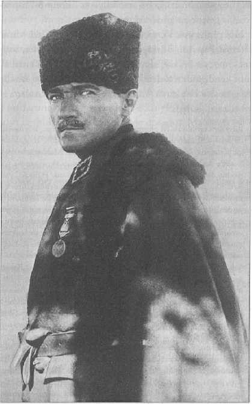
Mareşal Gazi Mustafa Kemal Paşa, Ankara, 4 Aralık 1921.
Millî Mücadele yıllarında sadece kumandanlar değil, halk da ana hatlarıyla ikiye ayrılmıştı. Bir kısmı savaşa devam edelim, işgal edilen yerleri kurtaralım, bir kısmı ise eldeki yerleri muhafaza edelim diyordu. Halkın durumu da perişandı. Ancak Mustafa Kemal, Ali Fuat ve Kâzım Karabekir Paşalar atak davrandılar ve dirayetleriyle halkı da etkilediler. Bunlar zeki, bilgili komutanlardı ve bir imparatorluğun da genç generalleri, eski bir devletin ve büyük bir milletin askerleriydiler. Gençken yaşlanan kumandanlardı diyebiliriz, çünkü çok genç ama tecrübeliydiler ve zor bir hayat yaşamışlardı. Birinci Dünya Savaşı bile bizim için 4 değil 6 sene sürdü. Kaldı ki ondan önce de Yemen’den Balkan’a kadar pek çok yerde bulunmuşlardı.
Bizim direneceğimizi gören İngiliz subayları, kralcı Yunan subayları ve Fransız kumandanları gibi ecnebiler de olmuştur. Her Fransız, Fransa Başbakanı Georges Clemenceau gibi Türklere karşı nefret dolu değildir. Realist olanlar da vardır.
İttifak yapmak kolay iş değildir. Hele Avrupalılardan uzak durmak lazımdı. Biz Kudüs’ü kaybettiğimizde herkesten fazla çan çalan, İngiliz General Allenby’den ve Britanya kamuoyundan aşağı kalmaz ölçüde zaferi kutlayanlar, bizim müttefikimiz olan Avusturya-Macaristan ve Almanya’daki kamuoyuydu.
Atatürk bir askerî dehadır. Ancak bunun tarifini yapmak çok güçtür. Bu noktada aldığı kurmay öğrenimi çok önemlidir. İyi bir eğitim aldılar, tabiri caizse her şeyi biliyorlardı, sivillerle irtibatları çoktu, felsefe, tarih, bilhassa coğrafya, edebiyat, mühendislik ve matematik hakkında bilgileri ve eğitimleri vardı, hiç değilse ne konuşulduğunu anlarlardı.
Nitekim aldığı eğitim Gazi Paşa’yı ileride ilginç adımlar atmaya yöneltti. Bozkırın ortasında, Ankara’da Dil ve Tarih-Coğrafya Fakültesi kuruldu. Türkiye âdeta arkeologların, Mezopotamya dillerinin eğitim ülkesi oldu.
Bizantinika için bile dört-beş talebe Avrupa’ya yollanmıştı. Lisana önem veriliyordu.
Venizelos yıllar sonra Türkiye’nin Cumhurbaşkanını Nobel Barış Ödülü’ne aday gösterdi. Neden? Venizelos şartlara uyum sağlayan bir devlet adamıydı. Hâlbuki ilk başta Megali İdea uğruna ikazları dinlemeyerek Anadolu’ya geldi. Sonra bir felakete dönüştü ve bu sefer de “oradaki Helenleri bize yollayın” diyerek mübadeleyi talep etti. Uçlarda bir politikacıydı ama dünyaya intibak etmeyi biliyordu. Yunanistan, o dönem aşırı duygusal hareket ediyordu, itidale ancak 20. yüzyılın sonlarında ulaşabilecekti.
İzmir’in Kurtarılması
20. yüzyılın başında İzmir henüz yeni yeni gelişen bir bölgesel merkezdi ve sadece iktisadi hayatta değil, nüfusta da Türk Müslüman halkın payı fazla değildi. Birdenbire İzmir’in nüfusu arttı ve kent Türkleşti, Müslümanlaştı. Balkanlar’da ve adalarda yaşanan facialarla yeni bir şehir ortaya çıktı ve bu şehir çok kısa bir zaman sonra bütün bir dünya savaşının bedelini ödercesine, âdeta harbin tek suçlusu ve mücrimiymiş gibi istila ve işgale uğradı. Bu işgalin sonunda ise bir direniş gösterdi. Balkan Savaşı ve Rumeli’nin kaybında dahi bu kadar sıkıntı yaşanmadığı açıktı. Yunanistan 15 Mayıs 1919’da İtilaf Devletlerinin ve özellikle ciddi bir iç muhalefete rağmen Lloyd George ve Eleftherios Venizelos’un ittifakı sayesinde İngiltere’nin ittirmesiyle İzmir’e çıktı. Uç yıl üç ay sonra tarihinin en önemli faciasını yaşayarak şehri terk etti. Bu, gerçekçilikle ilişkisi olmayan siyasi bir programın iflasıdır.
2 Eylül 1922’de İzmir’deki Yunan yüksek komiseri, daha doğrusu İzmir ve civarına Venizelos tarafından tayin edilen Vali Aristidis Stergiadis, memurlarına arşivleri toplamaları, önemli kısmını imha etmeleri ve şehri boşaltmaya hazır olmaları emrini vermişti.
30 Ağustos bozgunundan beri Batı Anadolu, Yunan ordusundan ve yerli Rumlardan boşalıyordu. Şehirde görülmemiş bir olaydı ama gerçekten kıtlık vardı. Güvenlik hiç kalmamıştı, üç yıl üç aylık işgalin sona ereceği belliydi.
Stergiadis hiç şüphesiz İzmir’in Helenleştirilmesi programının başındaydı. O, bu planı bir ölçü ve düzenle, Türkleri de fazla ezmeden uygulamak gerektiğini anlamıştı ama herkesin, özellikle de etrafmdakilerin bunu anladığını söylemek mümkün değildi. Sonuç hazindi, 1922’de ayrılırken Stergiadis’in en büyük düşmanları Rum-Ortodoks kilisesi ve İzmir’in Yunanlılarıydı, sinirleri bozulmuş olarak görevini bitiriyordu.
Aristidis Stergiadis, Yunan cumhuriyetini kuran ve galip devletlerin gözdesi “Büyük Giritli” denen Elefterios Venizelos’un yakın çevresindendi ve İzmir’e tayin edilen memurların içinde, hukukçuluğu dışında İslam hukuku üzerindeki bilgisiyle de tanınıyordu.
Bunlar belki yeterli nitelikler değildi, Stergiadis, Epir (Yanya) valiliği yapmıştı, orada azınlıkların hukukuna riayet eden bir memur olarak tanınmıştı. İzmir’de de doğrusu temel iktisadi prensiplerin dışında, Türklerle Yunanlılar arasında ayrım yapmamaya çalıştı. Daha evvelki valilerden İttihatçı Rahmi Bey’in aksine şehrin Levanten aileleriyle de fazla yakınlık kurmadı. Onların gözünde seçkin bir centilmen sıfatı kazanmadığı gibi, bölgenin Rumlarıyla da arası bozuldu. Çünkü İzmirli Rumlar, bilhassa iş adamları bu işgalden çok büyük kazançlar bekliyorlardı. Sonunda üç yıl boyu her hareketi ve girişimi önplanda kilise memurları ve İzmir’deki Helenler tarafından sabote edilen vah olarak İzmir’i terk etti.
Giles Milton’un Kayıp Cennet’inde^-^ fazla abartılarak, kozmopolit (!) bir dünyadan bahsediliyor. Ancak bu kozmopolit dünyanın içinde adamakıllı gerilimler vardı. Üç yıllık işgalde Yunanistan ve Ege’deki Yunan halkı çok fazla şey beklediler. Stergiadis gibileri de bu ölçüsüzlüğü önleyemedi ve beklenen son geldi.
1922’nin Türkiyesi gerçekçi bir kumanda heyetiyle ulaşması gereken noktaya gelmişti. Başkumandan Meydan Muharebesindeki süratli hareket emri, aynı zamanda Türkiye Cumhuriyeti’nin doğal sınırlarının Akdeniz olması üzerinde yoğunlaşıyordu. Dokuz asırlık Türk tarihi, Orta Asya ve Horasan ikliminden Akdeniz’e yönelmeyi ve ulaşmayı amaçlamaktaydı. Binaenaleyh, imparatorluğun bu mirasının elden çıkmasını Gazi Mustafa Kemal Paşa’nm ne askerî dehası ne de medeniyet tarihi anlayışı uygun görürdü. Ordulara yönelik “İlk hedefiniz Akdeniz’dir”-^^ emri, işte bu konuyla ilgili kesin bir emirdir ve meydan savaşının kazanılmasından dokuz gün sonra ordular İzmir’e bu emirle girmişlerdir. İzmir’in istirdatmda yerli Rum nüfus büyük zarar gördü, yerlerini terk etmek zorunda kaldılar. Şehrin uğradığı büyük yangının nedenleri ve tertibi hâlâ tartışılmaktadır ve politik malzeme konusudur. Zamanın getirdiği itidal içinde olayın daha mantıkî şekilde araştırılıp değerlendirilmesi gerekir. İşgal boyunca Helen nüfus ve Yunan işgal ordusuyla ilişkisi olan Ermeni cemaati büyük ve ani bir kayba uğradı. İşgal kuvvetleriyle değil de yerli Türkler ve idarecilerle hareket eden Yahudi cemaati ise İzmir’in yerli Müslüman nüfusuyla daha iyi geçindi ve bu uyum sonra da devam etti.
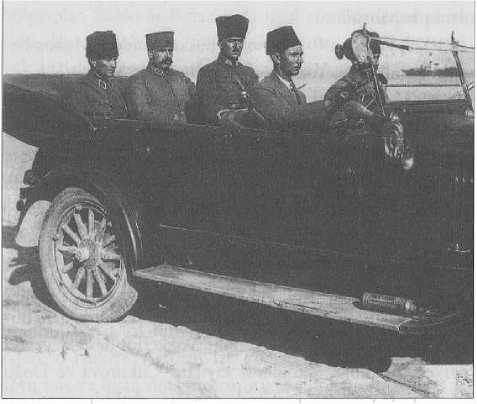
Başkumandan Gazi Mustafa Kemal, yaveri Salih (Bozok) Bey ve Fevzi (Çakmak) Paşa ile İzmir Kordonu’nda, 10 Eylül
1922.
Üç yıllık işgalin son aylarında Yunanistan, Ege’de kendine bağlı ve paralel bir İyonya Cumhuriyeti kurmaya çalıştı, Yunan millî bankası İzmir ve Ayvalık’ta şubeler açtı. İyonya Cumhuriyeti bir de ordu kurdu ve yerli Helen nüfus askere alındı. Bu andan itibaren vatana ihanet durumu söz konusudur, üniformalı isyancı böyle tarif ediliyor. Kozmopolit ve barışsever İzmir artık sona ermişti. 9 Eylül 1922 ise bu dönemin kapanışıdır.
1922 yılının 30 Ağustos’u Başkumandan Muharebesinin kazanıldığı, Yunan ordularının askerî ve stratejik anlamda dağınık olarak ricata başladığı gündür. 1922 Ağustos’unda Anadolu’daki ordularının yenilgisi ve Başkumandan Trikopis’in tesliminden sonra, birliklerin ricatı bir kaos ve yangın yarattı. 1 Eylül’de Başkumandan emri ordulara ilk hedef olarak Akdeniz’i gösteriyordu, yani sonradan adı Ege Denizi’ne çevrilen denizin kıyılarını... Bu konu da İzmir yangını kadar tartışılmaktadır.-99Esasında bu umulmadık bir gelişmeydi. Zira
Kurtuluş Savaşı’mn başlarında, hatta Sakarya Zaferi sırasında dahi birçok ciddi kumandan ve Anadolu hareketini destekleyenler merkezî Anadolu, Karadeniz kıyıları, Çukurova ve Doğu Anadolu ile yetinmenin o anda daha gerçekçi bir strateji olduğunu düşünmüşlerdir. İzmir’in ve Bursa’mn kurtarılması idealinin bu kadar çabuk gerçekleştirilmesi, Mustafa Kemal Paşa’mn askerî dehasıyla açıklanabilir.
1919 Mayısı’mn başında Venizelos ve kendisine tabi kumandanlar kralı devirme eylemini İzmir’e çıkışla taçlandırmışlardı. Yorgun Britanya, askerî kuvvet olarak savaşa geç girmiş ve az yıpranmış Yunanistan’ı tercih etmişti. Venizelos siyasi mahfillerde günün adamıydı. Yunanistan Batı Anadolu’da İyonya denen eski Aydın vilayetinin (bugünkü İzmir, Aydın, Manisa, Denizli) yanı sıra, eskilerin Karya dediği Muğla’nın da işgalini düşlüyordu.-^ Düşlediği diğer bölge olan Balıkesir-Bursa’yı da işgal etmekle kalmayacak, Eskişehir ve Ankara’ya doğru yönelecekti. Başlangıçta büyük iddialar içeren bu plan, ülke içinde tam bir fiyasko ile nihayete erecekti. Sonunda Yunanistan’ın Küçük Asya seferi bu ülke için 1922-24 arasında nüfus mübadelesi ile sonuçlanan bir dizi olumsuz gelişmeler yarattı. Yunanistan’ın yeni sakinleri işsiz, yeni yurda uyum sağlayamayan kimselerdi ve daha önce pek tanımadıkları sol akımlara eğilim gösterdiler.
İstanbul’un İşgal Günleri Devam Ediyordu
İzmir ve Batı Anadolu Yunan işgalinden kurtarılmıştı lâkin İstanbul’daki işgal sürüyordu. Hiç şüphesiz ki 30 Ağustos zaferiyle Türkiye, Ağustos 1071’de adım attığı vatanı tekrar korumuş ve işgali sona erdirmiştir. Eylül ayı sonlarında, İstanbul hariç Anadolu’nun işgali sona erdi. Mudanya’da İtilaf Devletleriyle 4-11 Ekim’de yapılan görüşmeler sonunda mütareke imzalandı. Trakya’nın Yunan askerî işgalinden kurtarılması yapılacaktı, Doğu Trakya’ya ise ilk elde 8 bin kişilik Türk jandarma
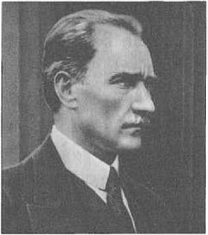 gücü sokulacaktı.
Yunan delegeleri yetkisizlik iddiasıyla mütarekeyi İkinci İnönü Muharebesi sonrası Mustafa Kemal Paşa,imzalamadı, belki de ilerideki mücadeleleri fakat itilaf düşünüyor...
Devletleri’nin baskısıyla Yunan Hükümeti bugünkü Türkiye Trakyası’m zamanında boşalttı. Savaştan dolayı herkes bıkkın ve yorgundu.
İstanbul Hükûmeti’nin barış görüşmelerine katılmasını önlemek için, TBMM’nin tarihî ve yönetimin devri Barış görüşmeleri Lozan’da 30 gün içinde tamamlanacaktı. kararıyla 1922 yılının Kasım ayında saltanata son verildi ve son padişah Türkiye’yi terk etti. İstanbul’a, yeni Türkiye’yi temsilen bir birlik girdi fakat şehrin işgal kuvvetlerinden devralınması 1923 Ekimi’ne kalmıştı. Bu bir yıl içinde İstanbul yönetiminde ve askerî yönetimindeki değişiklikler ilginç olmalıdır. Hadisesiz bir dönem değildi ama hiç şüphesiz ki mütareke havası kalkmıştı. Dönemi, muğlak sözlü hatıraların dışında iyi bildiğimizi hâlâ söyleyemeyiz. Mütareke dönemi ve Cumhuriyet İstanbul’u arasındaki ara dönem, arşivci tarihçilerin ve gazete koleksiyonlarına göz atacakların ilgisini bekliyor.
Fatih’ten Sonra Bir Kez Daha...
1922 Mudanya Mütarekesi’nden sonra İstanbul’a ilk birlikler, önce Şükrü Naili Paşa, ardından Refet Paşa kumandasında girdi. İşte bu 1922 sonbaharıyla İstanbul’un kurtuluş günü sayılan Ekim 1923 arası, şehir tarihimizin muğlak noktasıdır. Hiç şüphesiz ki o bir yıl, daha evvelki dört yıla (18 Kasım 1918-Ekim 1922 arası) benzemiyordu.
Nasıl bir geçiş dönemi yaşandı denilirse; saltanat sona ermişti, halife sadece halifeydi ve kati surette, siyasi yahut mülkî bir otorite değildi. Sözde ruhanî otorite de tarif edilmiş değildi, edilemezdi de. Bu şehirdeki üst makamlar, yani Anadolu temsilcileri, işgal kuvvetleri kumandanları ve halifenin konumu neydi? Uzun bir harbin ve mütarekenin sıkıntılarıyla bitmiş İstanbul’da, üstelik Beyaz Ruslar gibi problemli mülteciler de vardı. Merhum Tarık Zafer Tunaya Hoca’nm Mütareke dönemi siyasi partilerini^^ ve Bilge Criss’in-^1 Mütareke dönemi İstanbulu’nu anlatan kitaplarıyla ilk dönemi biraz biliyoruz; fakat bu bir yıllık ara dönem nedir? Saraydan bazı eşyaları saraylıların aldığı söylendiği gibi bu iddiayı katiyyen reddedenler de vardır. Devletin hanedanı kadar gayr-ı müslimlerin kurumlan o bir yıllık geçici dönemde ne yaptı bilinmelidir. Ama her şeye rağmen daha güvenli ve başı dik bir şehir ortaya çıktı ve 1923 Ekimi’nde Nureddin Paşa kumandasındaki Anadolu ordusu bekleniyordu. İddia sahipleri boş konuşmadan evvel gazete taramalı, yerli ve yabancı dergilere ve raporlara bakmalıdır. Yabancı diplomatların dışişleri arşivlerindeki raporlarını da okumak elzemdir. Emin olun, gazetecilik açısından da çok ilginç bilgiler çıkar.
Ancak şu bir gerçek ki, İstanbul Batılı istilacılar tarafından ikinci kez işgal edilmişti. (1204-1261) İlki Bizans’taki Latin Haçlı işgalidir. İkincisi ise Mütareke dönemiydi ve deyim yerindeyse Fatih Sultan Mehmed’den sonra, bu defa Mustafa Kemal Paşa’nm Türk ordusu şehri yeniden fethedecekti.